-
To verify the Asset CD Master full flow
09:47:37 am / 52:16:965 Pass
To verify the Asset CD Master full flow
02.10.2023 09:47:37 02.10.2023 10:09:54 52:16:965 · #test-id=1PassTo verify the Asset CD Master all flowAnd User get the testdata for Assert CD Master testcase001stepdefinitions.HooksClass.addScreenshot(io.cucumber.java.Scenario)screenshot Given User login as uls maker in asset CD masterstepdefinitions.HooksClass.addScreenshot(io.cucumber.java.Scenario)screenshotThen User click the Configurations in asset auto masterstepdefinitions.HooksClass.addScreenshot(io.cucumber.java.Scenario)screenshot
Given User login as uls maker in asset CD masterstepdefinitions.HooksClass.addScreenshot(io.cucumber.java.Scenario)screenshotThen User click the Configurations in asset auto masterstepdefinitions.HooksClass.addScreenshot(io.cucumber.java.Scenario)screenshot And User click the config manager in Bounce masterstepdefinitions.HooksClass.addScreenshot(io.cucumber.java.Scenario)screenshot
And User click the config manager in Bounce masterstepdefinitions.HooksClass.addScreenshot(io.cucumber.java.Scenario)screenshot And User click the edit icon in asset CD masterstepdefinitions.HooksClass.addScreenshot(io.cucumber.java.Scenario)screenshot
And User click the edit icon in asset CD masterstepdefinitions.HooksClass.addScreenshot(io.cucumber.java.Scenario)screenshot And User click the add icon in asset CD masterstepdefinitions.HooksClass.addScreenshot(io.cucumber.java.Scenario)screenshotAnd User verify the save back help button in asset CD masterstepdefinitions.HooksClass.addScreenshot(io.cucumber.java.Scenario)screenshot
And User click the add icon in asset CD masterstepdefinitions.HooksClass.addScreenshot(io.cucumber.java.Scenario)screenshotAnd User verify the save back help button in asset CD masterstepdefinitions.HooksClass.addScreenshot(io.cucumber.java.Scenario)screenshot And User verify the all mentioned fields in asset CD masterstepdefinitions.HooksClass.addScreenshot(io.cucumber.java.Scenario)screenshot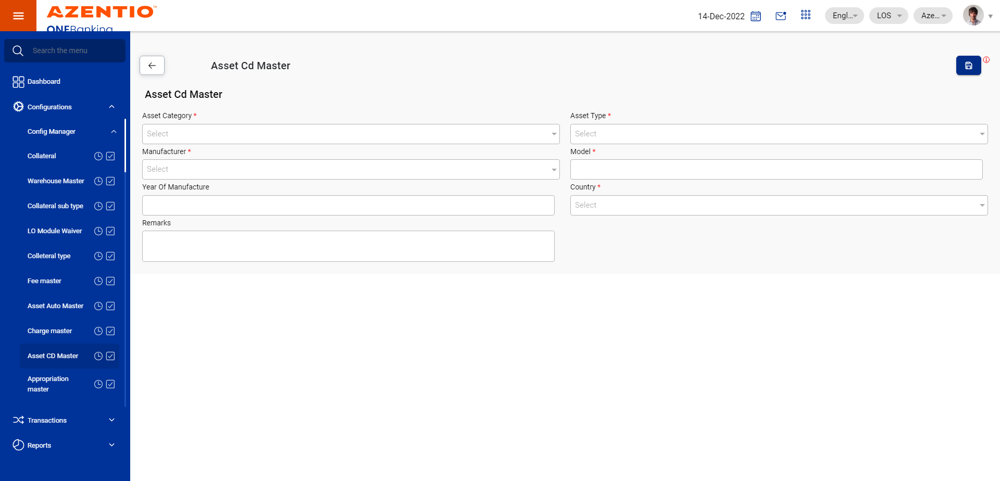Then User click the back button in asset CD masterstepdefinitions.HooksClass.addScreenshot(io.cucumber.java.Scenario)screenshotAnd User click the add icon in asset CD masterstepdefinitions.HooksClass.addScreenshot(io.cucumber.java.Scenario)screenshot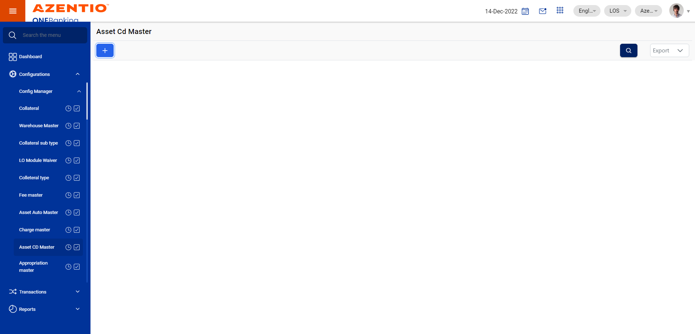Then User verify the asset category fields in asset CD masterstepdefinitions.HooksClass.addScreenshot(io.cucumber.java.Scenario)screenshot
And User verify the all mentioned fields in asset CD masterstepdefinitions.HooksClass.addScreenshot(io.cucumber.java.Scenario)screenshot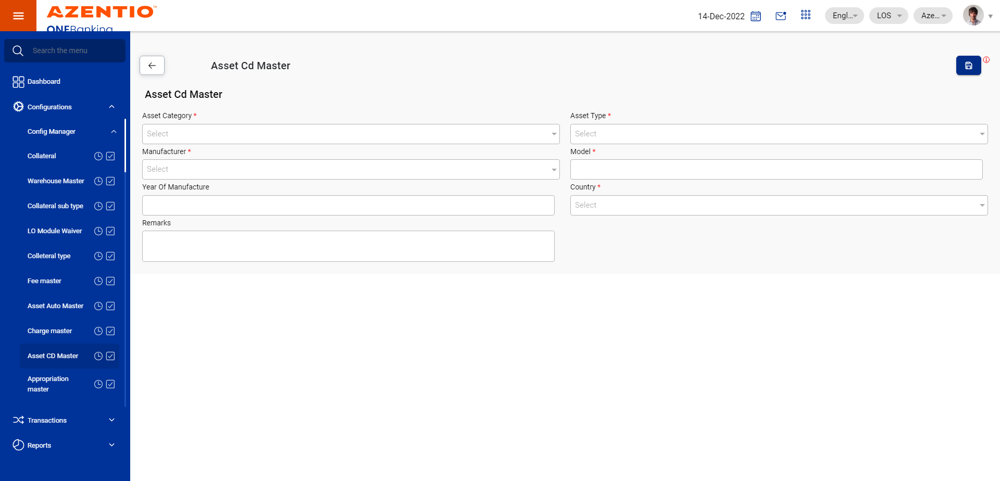Then User click the back button in asset CD masterstepdefinitions.HooksClass.addScreenshot(io.cucumber.java.Scenario)screenshotAnd User click the add icon in asset CD masterstepdefinitions.HooksClass.addScreenshot(io.cucumber.java.Scenario)screenshot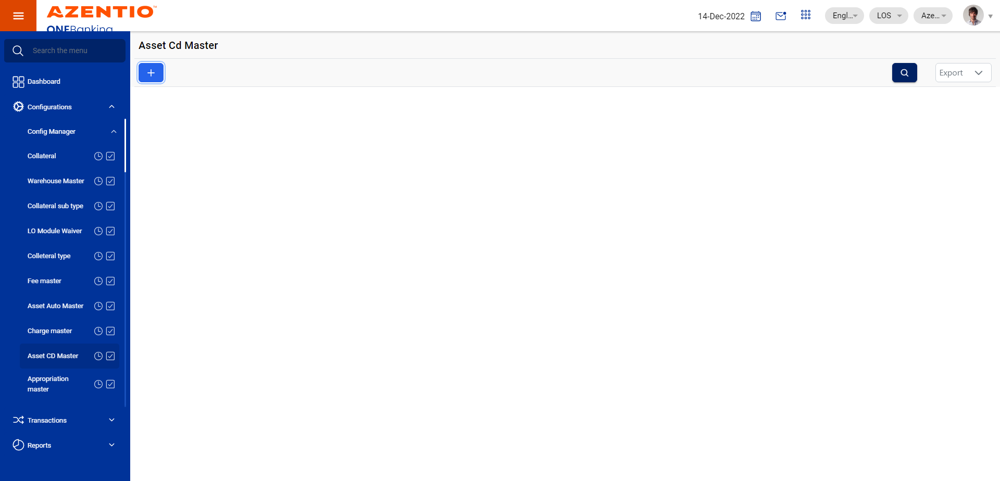Then User verify the asset category fields in asset CD masterstepdefinitions.HooksClass.addScreenshot(io.cucumber.java.Scenario)screenshot And User enter the value in asset category for asset CD masterstepdefinitions.HooksClass.addScreenshot(io.cucumber.java.Scenario)screenshot
And User enter the value in asset category for asset CD masterstepdefinitions.HooksClass.addScreenshot(io.cucumber.java.Scenario)screenshot And User enter the value in asset type for asset CD masterstepdefinitions.HooksClass.addScreenshot(io.cucumber.java.Scenario)screenshotAnd User enter the value in manufacturer for asset CD masterstepdefinitions.HooksClass.addScreenshot(io.cucumber.java.Scenario)screenshotAnd User enter the value in model for asset CD masterstepdefinitions.HooksClass.addScreenshot(io.cucumber.java.Scenario)screenshot
And User enter the value in asset type for asset CD masterstepdefinitions.HooksClass.addScreenshot(io.cucumber.java.Scenario)screenshotAnd User enter the value in manufacturer for asset CD masterstepdefinitions.HooksClass.addScreenshot(io.cucumber.java.Scenario)screenshotAnd User enter the value in model for asset CD masterstepdefinitions.HooksClass.addScreenshot(io.cucumber.java.Scenario)screenshot And User enter the value in year of manufacture for asset CD masterstepdefinitions.HooksClass.addScreenshot(io.cucumber.java.Scenario)screenshotAnd User enter the value in country for asset CD masterstepdefinitions.HooksClass.addScreenshot(io.cucumber.java.Scenario)screenshotAnd User enter the value in remarks for asset CD masterstepdefinitions.HooksClass.addScreenshot(io.cucumber.java.Scenario)screenshotAnd User click the save button for asset CD masterstepdefinitions.HooksClass.addScreenshot(io.cucumber.java.Scenario)screenshot
And User enter the value in year of manufacture for asset CD masterstepdefinitions.HooksClass.addScreenshot(io.cucumber.java.Scenario)screenshotAnd User enter the value in country for asset CD masterstepdefinitions.HooksClass.addScreenshot(io.cucumber.java.Scenario)screenshotAnd User enter the value in remarks for asset CD masterstepdefinitions.HooksClass.addScreenshot(io.cucumber.java.Scenario)screenshotAnd User click the save button for asset CD masterstepdefinitions.HooksClass.addScreenshot(io.cucumber.java.Scenario)screenshot Then User verify the confirmation message in asset CD masterstepdefinitions.HooksClass.addScreenshot(io.cucumber.java.Scenario)screenshot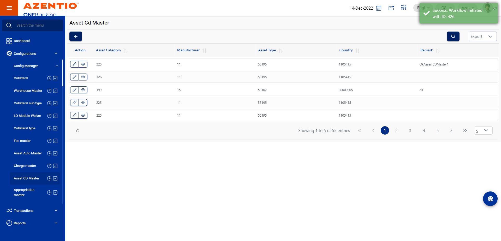Then User click the inboxmail icon in asset CD masterstepdefinitions.HooksClass.addScreenshot(io.cucumber.java.Scenario)screenshotAnd User click the search icon in asset CD master and get the reference idstepdefinitions.HooksClass.addScreenshot(io.cucumber.java.Scenario)screenshot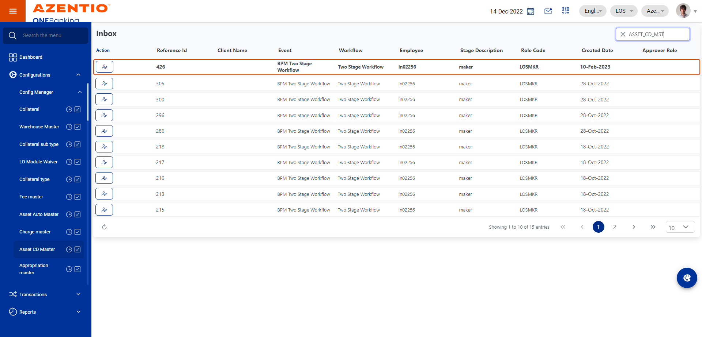And User click the submit icon in asset CD master makerstepdefinitions.HooksClass.addScreenshot(io.cucumber.java.Scenario)screenshotAnd User enter the popup remark and submit the asset CD masterstepdefinitions.HooksClass.addScreenshot(io.cucumber.java.Scenario)screenshotAnd User get confirmation message and checker id in asset CD masterstepdefinitions.HooksClass.addScreenshot(io.cucumber.java.Scenario)screenshot
Then User verify the confirmation message in asset CD masterstepdefinitions.HooksClass.addScreenshot(io.cucumber.java.Scenario)screenshot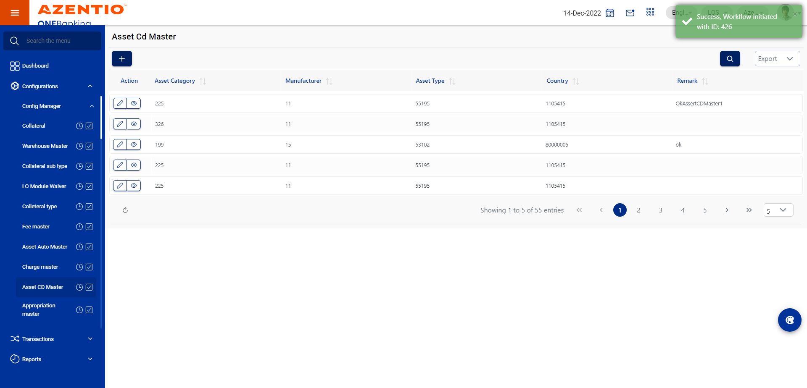Then User click the inboxmail icon in asset CD masterstepdefinitions.HooksClass.addScreenshot(io.cucumber.java.Scenario)screenshotAnd User click the search icon in asset CD master and get the reference idstepdefinitions.HooksClass.addScreenshot(io.cucumber.java.Scenario)screenshot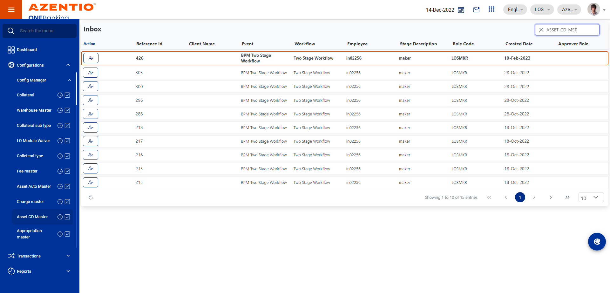And User click the submit icon in asset CD master makerstepdefinitions.HooksClass.addScreenshot(io.cucumber.java.Scenario)screenshotAnd User enter the popup remark and submit the asset CD masterstepdefinitions.HooksClass.addScreenshot(io.cucumber.java.Scenario)screenshotAnd User get confirmation message and checker id in asset CD masterstepdefinitions.HooksClass.addScreenshot(io.cucumber.java.Scenario)screenshot And User Logout from applicationstepdefinitions.HooksClass.addScreenshot(io.cucumber.java.Scenario)screenshot
And User Logout from applicationstepdefinitions.HooksClass.addScreenshot(io.cucumber.java.Scenario)screenshot PassTo verify user able to approve in checker stage for Asset-CD-MasterAnd User get the testdata for Assert CD Master testcase001stepdefinitions.HooksClass.addScreenshot(io.cucumber.java.Scenario)screenshot
PassTo verify user able to approve in checker stage for Asset-CD-MasterAnd User get the testdata for Assert CD Master testcase001stepdefinitions.HooksClass.addScreenshot(io.cucumber.java.Scenario)screenshot Given User login as uls checker in asset CD masterstepdefinitions.HooksClass.addScreenshot(io.cucumber.java.Scenario)screenshot
Given User login as uls checker in asset CD masterstepdefinitions.HooksClass.addScreenshot(io.cucumber.java.Scenario)screenshot And User click the inboxicon in asset CD master checkerstepdefinitions.HooksClass.addScreenshot(io.cucumber.java.Scenario)screenshot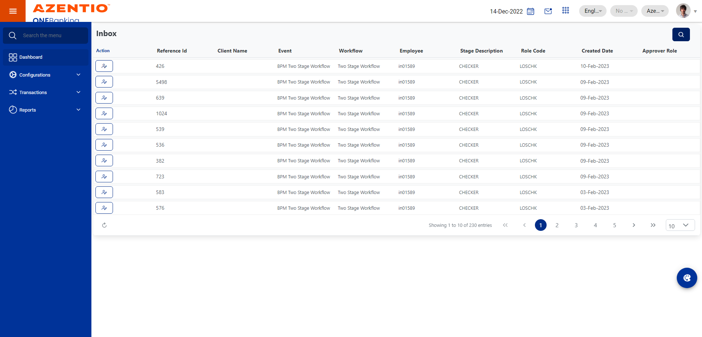And User click the search icon in asset CD master and get the reference idstepdefinitions.HooksClass.addScreenshot(io.cucumber.java.Scenario)screenshotAnd User search the respective reference id and click on Action button in asset CD masterstepdefinitions.HooksClass.addScreenshot(io.cucumber.java.Scenario)screenshot
And User click the inboxicon in asset CD master checkerstepdefinitions.HooksClass.addScreenshot(io.cucumber.java.Scenario)screenshot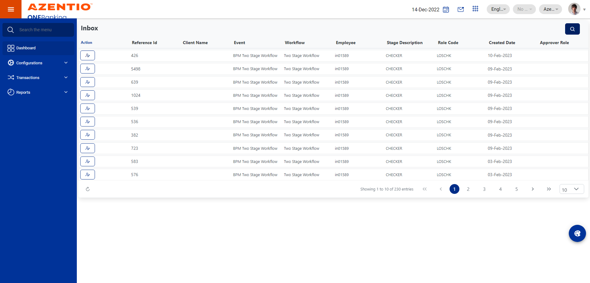And User click the search icon in asset CD master and get the reference idstepdefinitions.HooksClass.addScreenshot(io.cucumber.java.Scenario)screenshotAnd User search the respective reference id and click on Action button in asset CD masterstepdefinitions.HooksClass.addScreenshot(io.cucumber.java.Scenario)screenshot And User click on Approve icon in asset CD master checkerstepdefinitions.HooksClass.addScreenshot(io.cucumber.java.Scenario)screenshot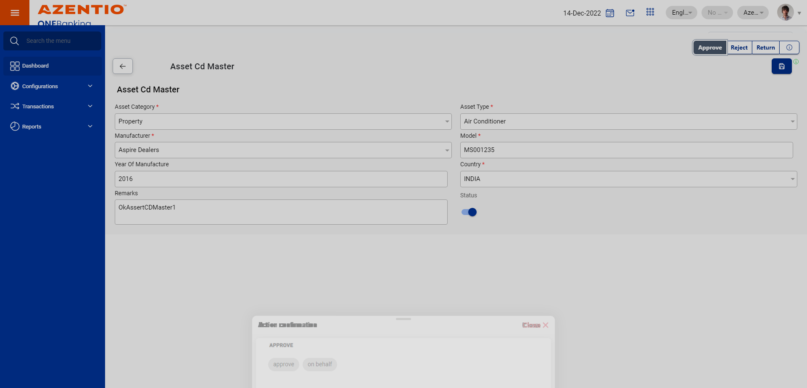And User click the popup remarks in asset CD master checkerstepdefinitions.HooksClass.addScreenshot(io.cucumber.java.Scenario)screenshotThen User enter the popup remarks in asset CD master checkerstepdefinitions.HooksClass.addScreenshot(io.cucumber.java.Scenario)screenshot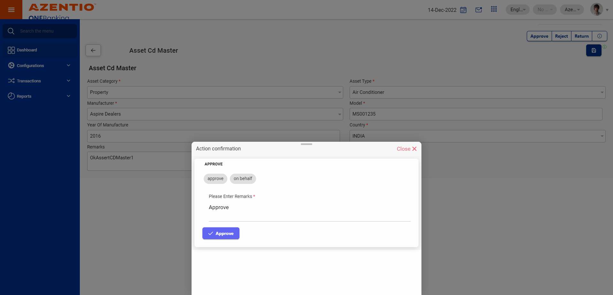And User click the popup approve in asset CD master checkerstepdefinitions.HooksClass.addScreenshot(io.cucumber.java.Scenario)screenshotThen User verify the Record got Approved in asset CD checkerstepdefinitions.HooksClass.addScreenshot(io.cucumber.java.Scenario)screenshotAnd User Logout from applicationstepdefinitions.HooksClass.addScreenshot(io.cucumber.java.Scenario)screenshot
And User click on Approve icon in asset CD master checkerstepdefinitions.HooksClass.addScreenshot(io.cucumber.java.Scenario)screenshot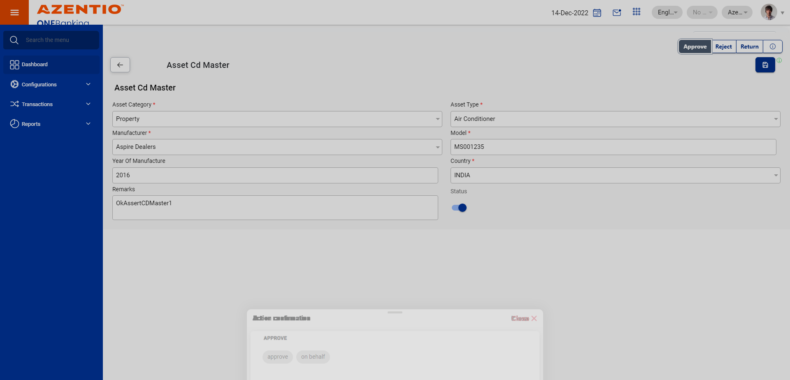And User click the popup remarks in asset CD master checkerstepdefinitions.HooksClass.addScreenshot(io.cucumber.java.Scenario)screenshotThen User enter the popup remarks in asset CD master checkerstepdefinitions.HooksClass.addScreenshot(io.cucumber.java.Scenario)screenshot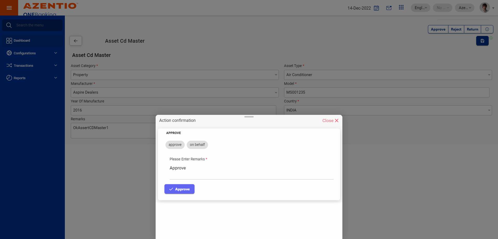And User click the popup approve in asset CD master checkerstepdefinitions.HooksClass.addScreenshot(io.cucumber.java.Scenario)screenshotThen User verify the Record got Approved in asset CD checkerstepdefinitions.HooksClass.addScreenshot(io.cucumber.java.Scenario)screenshotAnd User Logout from applicationstepdefinitions.HooksClass.addScreenshot(io.cucumber.java.Scenario)screenshot PassTo verify user able to approve in checker stage and verify in maker stage for Asset-CD-MasterAnd User get the testdata for Assert CD Master testcase001stepdefinitions.HooksClass.addScreenshot(io.cucumber.java.Scenario)screenshot
PassTo verify user able to approve in checker stage and verify in maker stage for Asset-CD-MasterAnd User get the testdata for Assert CD Master testcase001stepdefinitions.HooksClass.addScreenshot(io.cucumber.java.Scenario)screenshot Given User login as uls maker in asset CD masterstepdefinitions.HooksClass.addScreenshot(io.cucumber.java.Scenario)screenshotThen User click the Configurations in asset auto masterstepdefinitions.HooksClass.addScreenshot(io.cucumber.java.Scenario)screenshot
Given User login as uls maker in asset CD masterstepdefinitions.HooksClass.addScreenshot(io.cucumber.java.Scenario)screenshotThen User click the Configurations in asset auto masterstepdefinitions.HooksClass.addScreenshot(io.cucumber.java.Scenario)screenshot And User click the config manager in Bounce masterstepdefinitions.HooksClass.addScreenshot(io.cucumber.java.Scenario)screenshotAnd Click the Asset CD Master setup eye icon in Asset CD masterstepdefinitions.HooksClass.addScreenshot(io.cucumber.java.Scenario)screenshotThen User validate the updated record in list view in Asset CD masterstepdefinitions.HooksClass.addScreenshot(io.cucumber.java.Scenario)screenshotAnd User Logout from applicationstepdefinitions.HooksClass.addScreenshot(io.cucumber.java.Scenario)screenshot
And User click the config manager in Bounce masterstepdefinitions.HooksClass.addScreenshot(io.cucumber.java.Scenario)screenshotAnd Click the Asset CD Master setup eye icon in Asset CD masterstepdefinitions.HooksClass.addScreenshot(io.cucumber.java.Scenario)screenshotThen User validate the updated record in list view in Asset CD masterstepdefinitions.HooksClass.addScreenshot(io.cucumber.java.Scenario)screenshotAnd User Logout from applicationstepdefinitions.HooksClass.addScreenshot(io.cucumber.java.Scenario)screenshot PassTo verify the Asset CD Master all flowAnd User get the testdata for Assert CD Master testcase003stepdefinitions.HooksClass.addScreenshot(io.cucumber.java.Scenario)screenshot
PassTo verify the Asset CD Master all flowAnd User get the testdata for Assert CD Master testcase003stepdefinitions.HooksClass.addScreenshot(io.cucumber.java.Scenario)screenshot Given User login as uls maker in asset CD masterstepdefinitions.HooksClass.addScreenshot(io.cucumber.java.Scenario)screenshot
Given User login as uls maker in asset CD masterstepdefinitions.HooksClass.addScreenshot(io.cucumber.java.Scenario)screenshot Then User click the Configurations in asset auto masterstepdefinitions.HooksClass.addScreenshot(io.cucumber.java.Scenario)screenshotAnd User click the config manager in Bounce masterstepdefinitions.HooksClass.addScreenshot(io.cucumber.java.Scenario)screenshot
Then User click the Configurations in asset auto masterstepdefinitions.HooksClass.addScreenshot(io.cucumber.java.Scenario)screenshotAnd User click the config manager in Bounce masterstepdefinitions.HooksClass.addScreenshot(io.cucumber.java.Scenario)screenshot And User click the edit icon in asset CD masterstepdefinitions.HooksClass.addScreenshot(io.cucumber.java.Scenario)screenshot
And User click the edit icon in asset CD masterstepdefinitions.HooksClass.addScreenshot(io.cucumber.java.Scenario)screenshot And User click the add icon in asset CD masterstepdefinitions.HooksClass.addScreenshot(io.cucumber.java.Scenario)screenshot
And User click the add icon in asset CD masterstepdefinitions.HooksClass.addScreenshot(io.cucumber.java.Scenario)screenshot And User enter the value in asset category for asset CD masterstepdefinitions.HooksClass.addScreenshot(io.cucumber.java.Scenario)screenshotAnd User enter the value in asset type for asset CD masterstepdefinitions.HooksClass.addScreenshot(io.cucumber.java.Scenario)screenshotAnd User enter the value in manufacturer for asset CD masterstepdefinitions.HooksClass.addScreenshot(io.cucumber.java.Scenario)screenshot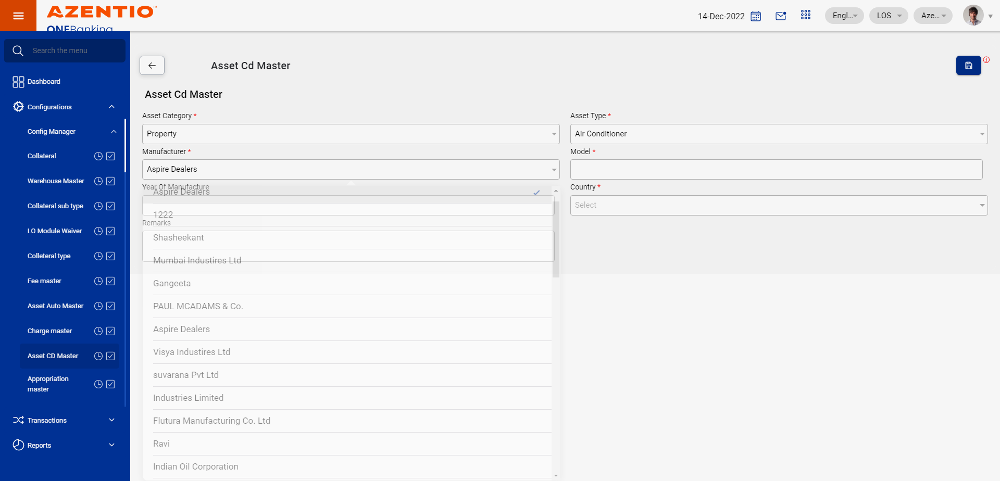And User enter the value in model for asset CD masterstepdefinitions.HooksClass.addScreenshot(io.cucumber.java.Scenario)screenshotAnd User enter the value in year of manufacture for asset CD masterstepdefinitions.HooksClass.addScreenshot(io.cucumber.java.Scenario)screenshotAnd User enter the value in country for asset CD masterstepdefinitions.HooksClass.addScreenshot(io.cucumber.java.Scenario)screenshotAnd User enter the value in remarks for asset CD masterstepdefinitions.HooksClass.addScreenshot(io.cucumber.java.Scenario)screenshot
And User enter the value in asset category for asset CD masterstepdefinitions.HooksClass.addScreenshot(io.cucumber.java.Scenario)screenshotAnd User enter the value in asset type for asset CD masterstepdefinitions.HooksClass.addScreenshot(io.cucumber.java.Scenario)screenshotAnd User enter the value in manufacturer for asset CD masterstepdefinitions.HooksClass.addScreenshot(io.cucumber.java.Scenario)screenshot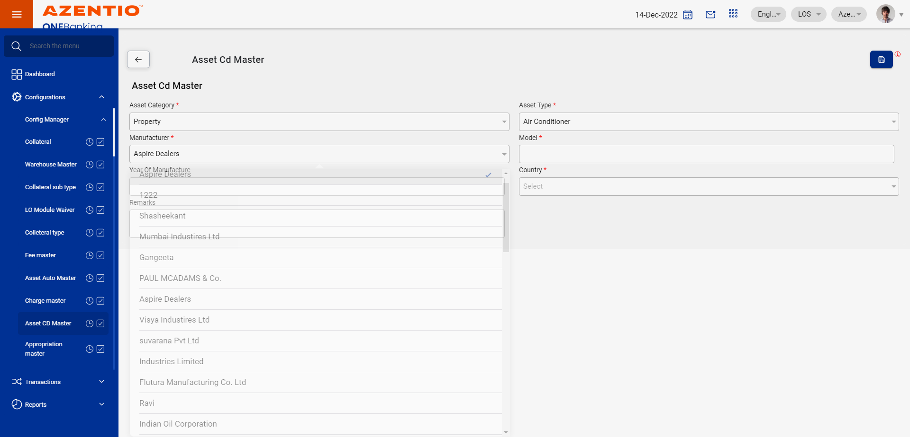And User enter the value in model for asset CD masterstepdefinitions.HooksClass.addScreenshot(io.cucumber.java.Scenario)screenshotAnd User enter the value in year of manufacture for asset CD masterstepdefinitions.HooksClass.addScreenshot(io.cucumber.java.Scenario)screenshotAnd User enter the value in country for asset CD masterstepdefinitions.HooksClass.addScreenshot(io.cucumber.java.Scenario)screenshotAnd User enter the value in remarks for asset CD masterstepdefinitions.HooksClass.addScreenshot(io.cucumber.java.Scenario)screenshot And User click the save button for asset CD masterstepdefinitions.HooksClass.addScreenshot(io.cucumber.java.Scenario)screenshot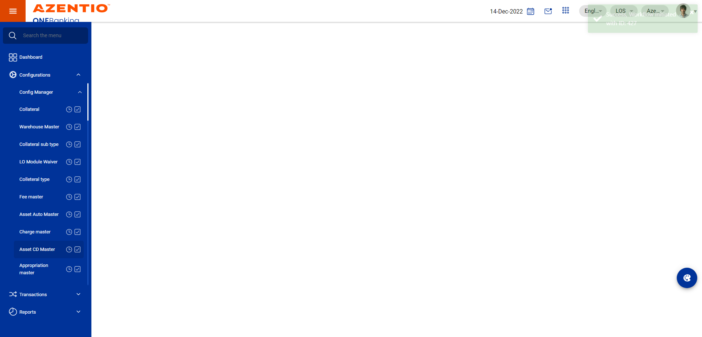Then User verify the confirmation message in asset CD masterstepdefinitions.HooksClass.addScreenshot(io.cucumber.java.Scenario)screenshot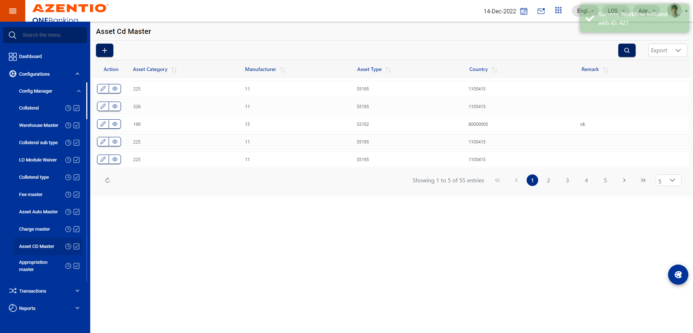Then User click the inboxmail icon in asset CD masterstepdefinitions.HooksClass.addScreenshot(io.cucumber.java.Scenario)screenshot
And User click the save button for asset CD masterstepdefinitions.HooksClass.addScreenshot(io.cucumber.java.Scenario)screenshot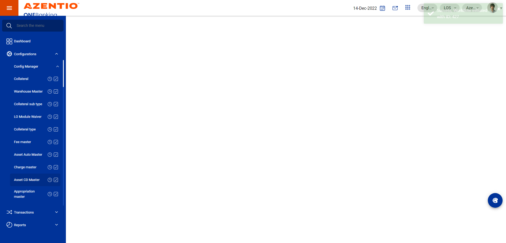Then User verify the confirmation message in asset CD masterstepdefinitions.HooksClass.addScreenshot(io.cucumber.java.Scenario)screenshot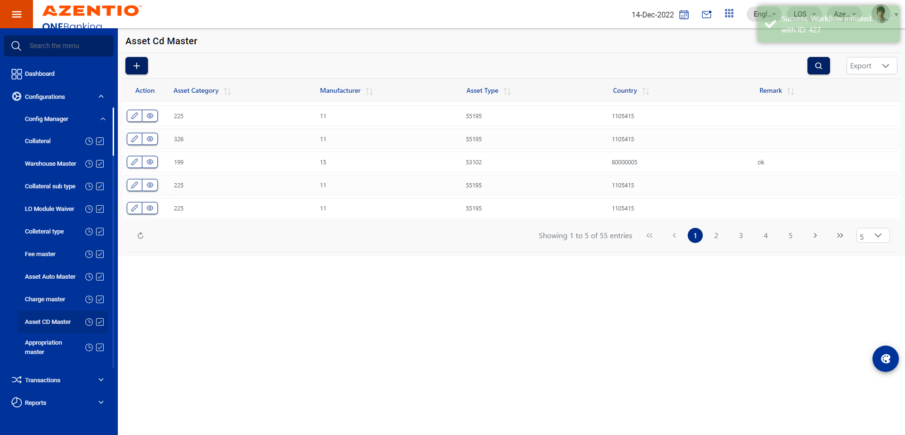Then User click the inboxmail icon in asset CD masterstepdefinitions.HooksClass.addScreenshot(io.cucumber.java.Scenario)screenshot And User click the search icon in asset CD master and get the reference id rejectstepdefinitions.HooksClass.addScreenshot(io.cucumber.java.Scenario)screenshotAnd User click the submit icon in asset CD master makerstepdefinitions.HooksClass.addScreenshot(io.cucumber.java.Scenario)screenshotAnd User enter the popup remark and submit the asset CD masterstepdefinitions.HooksClass.addScreenshot(io.cucumber.java.Scenario)screenshotAnd User get confirmation message and checker id in asset CD master rejectstepdefinitions.HooksClass.addScreenshot(io.cucumber.java.Scenario)screenshot
And User click the search icon in asset CD master and get the reference id rejectstepdefinitions.HooksClass.addScreenshot(io.cucumber.java.Scenario)screenshotAnd User click the submit icon in asset CD master makerstepdefinitions.HooksClass.addScreenshot(io.cucumber.java.Scenario)screenshotAnd User enter the popup remark and submit the asset CD masterstepdefinitions.HooksClass.addScreenshot(io.cucumber.java.Scenario)screenshotAnd User get confirmation message and checker id in asset CD master rejectstepdefinitions.HooksClass.addScreenshot(io.cucumber.java.Scenario)screenshot And User Logout from applicationstepdefinitions.HooksClass.addScreenshot(io.cucumber.java.Scenario)screenshotPassTo verify the user able to reject the record in asset CD masterAnd User get the testdata for Assert CD Master testcase003stepdefinitions.HooksClass.addScreenshot(io.cucumber.java.Scenario)screenshot
And User Logout from applicationstepdefinitions.HooksClass.addScreenshot(io.cucumber.java.Scenario)screenshotPassTo verify the user able to reject the record in asset CD masterAnd User get the testdata for Assert CD Master testcase003stepdefinitions.HooksClass.addScreenshot(io.cucumber.java.Scenario)screenshot Given User login as uls checker in asset CD masterstepdefinitions.HooksClass.addScreenshot(io.cucumber.java.Scenario)screenshot
Given User login as uls checker in asset CD masterstepdefinitions.HooksClass.addScreenshot(io.cucumber.java.Scenario)screenshot And User click the inboxicon in asset CD master checkerstepdefinitions.HooksClass.addScreenshot(io.cucumber.java.Scenario)screenshot
And User click the inboxicon in asset CD master checkerstepdefinitions.HooksClass.addScreenshot(io.cucumber.java.Scenario)screenshot And User click the search icon in asset CD master and get the reference id reject1stepdefinitions.HooksClass.addScreenshot(io.cucumber.java.Scenario)screenshotAnd User search the respective reference id and click on Action button in asset CD masterstepdefinitions.HooksClass.addScreenshot(io.cucumber.java.Scenario)screenshotAnd User click the reject icon in asset CD master checkerstepdefinitions.HooksClass.addScreenshot(io.cucumber.java.Scenario)screenshotAnd User enter the reject remark in asset CD master checkerstepdefinitions.HooksClass.addScreenshot(io.cucumber.java.Scenario)screenshot
And User click the search icon in asset CD master and get the reference id reject1stepdefinitions.HooksClass.addScreenshot(io.cucumber.java.Scenario)screenshotAnd User search the respective reference id and click on Action button in asset CD masterstepdefinitions.HooksClass.addScreenshot(io.cucumber.java.Scenario)screenshotAnd User click the reject icon in asset CD master checkerstepdefinitions.HooksClass.addScreenshot(io.cucumber.java.Scenario)screenshotAnd User enter the reject remark in asset CD master checkerstepdefinitions.HooksClass.addScreenshot(io.cucumber.java.Scenario)screenshot And User click the final reject icon in asset CD master checkerstepdefinitions.HooksClass.addScreenshot(io.cucumber.java.Scenario)screenshotThen User verify the Record got Rejected in asset CD checkerstepdefinitions.HooksClass.addScreenshot(io.cucumber.java.Scenario)screenshot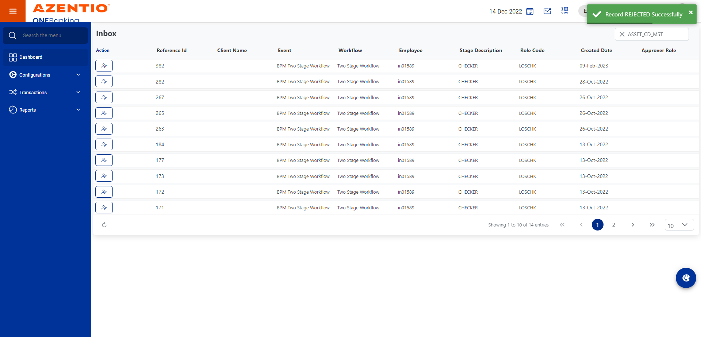And User Logout from applicationstepdefinitions.HooksClass.addScreenshot(io.cucumber.java.Scenario)screenshot
And User click the final reject icon in asset CD master checkerstepdefinitions.HooksClass.addScreenshot(io.cucumber.java.Scenario)screenshotThen User verify the Record got Rejected in asset CD checkerstepdefinitions.HooksClass.addScreenshot(io.cucumber.java.Scenario)screenshot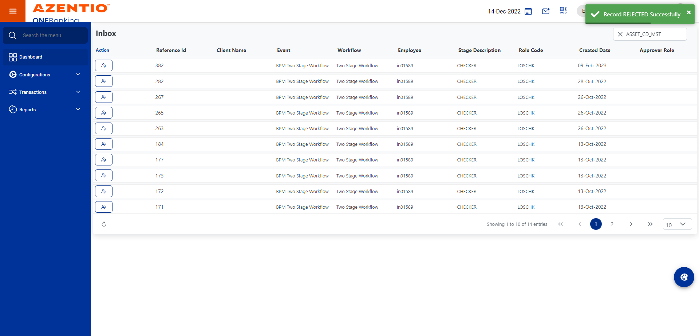And User Logout from applicationstepdefinitions.HooksClass.addScreenshot(io.cucumber.java.Scenario)screenshot PassTo verify the rejected record shown in asset CD master maker stageAnd User get the testdata for Assert CD Master testcase003stepdefinitions.HooksClass.addScreenshot(io.cucumber.java.Scenario)screenshot
PassTo verify the rejected record shown in asset CD master maker stageAnd User get the testdata for Assert CD Master testcase003stepdefinitions.HooksClass.addScreenshot(io.cucumber.java.Scenario)screenshot Given User login as uls maker in asset CD masterstepdefinitions.HooksClass.addScreenshot(io.cucumber.java.Scenario)screenshot
Given User login as uls maker in asset CD masterstepdefinitions.HooksClass.addScreenshot(io.cucumber.java.Scenario)screenshot Then User click the Configurations in asset auto masterstepdefinitions.HooksClass.addScreenshot(io.cucumber.java.Scenario)screenshotAnd User click the config manager in Bounce masterstepdefinitions.HooksClass.addScreenshot(io.cucumber.java.Scenario)screenshot
Then User click the Configurations in asset auto masterstepdefinitions.HooksClass.addScreenshot(io.cucumber.java.Scenario)screenshotAnd User click the config manager in Bounce masterstepdefinitions.HooksClass.addScreenshot(io.cucumber.java.Scenario)screenshot And Click the Asset CD Master setup eye icon in Asset CD masterstepdefinitions.HooksClass.addScreenshot(io.cucumber.java.Scenario)screenshotThen User click the inboxmail icon in asset CD masterstepdefinitions.HooksClass.addScreenshot(io.cucumber.java.Scenario)screenshotAnd User verify the rejected record removed from the system in asset CD masterstepdefinitions.HooksClass.addScreenshot(io.cucumber.java.Scenario)screenshot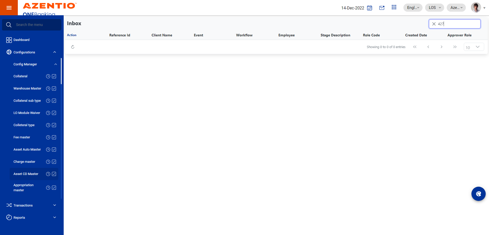And User Logout from applicationstepdefinitions.HooksClass.addScreenshot(io.cucumber.java.Scenario)screenshot
And Click the Asset CD Master setup eye icon in Asset CD masterstepdefinitions.HooksClass.addScreenshot(io.cucumber.java.Scenario)screenshotThen User click the inboxmail icon in asset CD masterstepdefinitions.HooksClass.addScreenshot(io.cucumber.java.Scenario)screenshotAnd User verify the rejected record removed from the system in asset CD masterstepdefinitions.HooksClass.addScreenshot(io.cucumber.java.Scenario)screenshot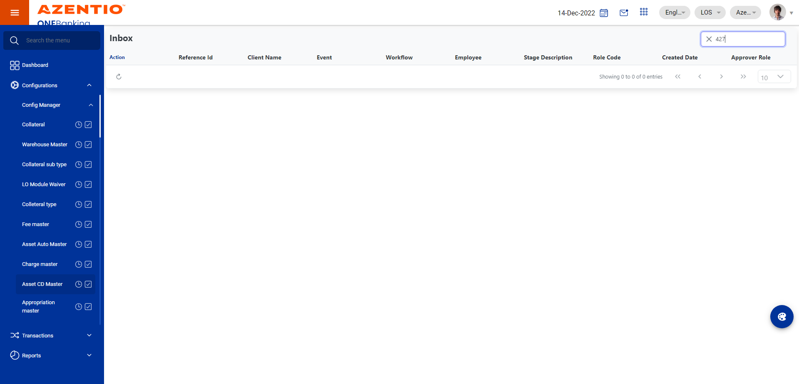And User Logout from applicationstepdefinitions.HooksClass.addScreenshot(io.cucumber.java.Scenario)screenshot PassTo verify the Asset CD Master all flowAnd User get the testdata for Assert CD Master testcase004stepdefinitions.HooksClass.addScreenshot(io.cucumber.java.Scenario)screenshot
PassTo verify the Asset CD Master all flowAnd User get the testdata for Assert CD Master testcase004stepdefinitions.HooksClass.addScreenshot(io.cucumber.java.Scenario)screenshot Given User login as uls maker in asset CD masterstepdefinitions.HooksClass.addScreenshot(io.cucumber.java.Scenario)screenshot
Given User login as uls maker in asset CD masterstepdefinitions.HooksClass.addScreenshot(io.cucumber.java.Scenario)screenshot Then User click the Configurations in asset auto masterstepdefinitions.HooksClass.addScreenshot(io.cucumber.java.Scenario)screenshotAnd User click the config manager in Bounce masterstepdefinitions.HooksClass.addScreenshot(io.cucumber.java.Scenario)screenshot
Then User click the Configurations in asset auto masterstepdefinitions.HooksClass.addScreenshot(io.cucumber.java.Scenario)screenshotAnd User click the config manager in Bounce masterstepdefinitions.HooksClass.addScreenshot(io.cucumber.java.Scenario)screenshot And User click the edit icon in asset CD masterstepdefinitions.HooksClass.addScreenshot(io.cucumber.java.Scenario)screenshotAnd User click the add icon in asset CD masterstepdefinitions.HooksClass.addScreenshot(io.cucumber.java.Scenario)screenshot
And User click the edit icon in asset CD masterstepdefinitions.HooksClass.addScreenshot(io.cucumber.java.Scenario)screenshotAnd User click the add icon in asset CD masterstepdefinitions.HooksClass.addScreenshot(io.cucumber.java.Scenario)screenshot And User enter the value in asset category for asset CD masterstepdefinitions.HooksClass.addScreenshot(io.cucumber.java.Scenario)screenshotAnd User enter the value in asset type for asset CD masterstepdefinitions.HooksClass.addScreenshot(io.cucumber.java.Scenario)screenshotAnd User enter the value in manufacturer for asset CD masterstepdefinitions.HooksClass.addScreenshot(io.cucumber.java.Scenario)screenshotAnd User enter the value in model for asset CD masterstepdefinitions.HooksClass.addScreenshot(io.cucumber.java.Scenario)screenshotAnd User enter the value in year of manufacture for asset CD masterstepdefinitions.HooksClass.addScreenshot(io.cucumber.java.Scenario)screenshotAnd User enter the value in country for asset CD masterstepdefinitions.HooksClass.addScreenshot(io.cucumber.java.Scenario)screenshotAnd User enter the value in remarks for asset CD masterstepdefinitions.HooksClass.addScreenshot(io.cucumber.java.Scenario)screenshot
And User enter the value in asset category for asset CD masterstepdefinitions.HooksClass.addScreenshot(io.cucumber.java.Scenario)screenshotAnd User enter the value in asset type for asset CD masterstepdefinitions.HooksClass.addScreenshot(io.cucumber.java.Scenario)screenshotAnd User enter the value in manufacturer for asset CD masterstepdefinitions.HooksClass.addScreenshot(io.cucumber.java.Scenario)screenshotAnd User enter the value in model for asset CD masterstepdefinitions.HooksClass.addScreenshot(io.cucumber.java.Scenario)screenshotAnd User enter the value in year of manufacture for asset CD masterstepdefinitions.HooksClass.addScreenshot(io.cucumber.java.Scenario)screenshotAnd User enter the value in country for asset CD masterstepdefinitions.HooksClass.addScreenshot(io.cucumber.java.Scenario)screenshotAnd User enter the value in remarks for asset CD masterstepdefinitions.HooksClass.addScreenshot(io.cucumber.java.Scenario)screenshot And User click the save button for asset CD masterstepdefinitions.HooksClass.addScreenshot(io.cucumber.java.Scenario)screenshot
And User click the save button for asset CD masterstepdefinitions.HooksClass.addScreenshot(io.cucumber.java.Scenario)screenshot Then User verify the confirmation message in asset CD masterstepdefinitions.HooksClass.addScreenshot(io.cucumber.java.Scenario)screenshotThen User click the inboxmail icon in asset CD masterstepdefinitions.HooksClass.addScreenshot(io.cucumber.java.Scenario)screenshot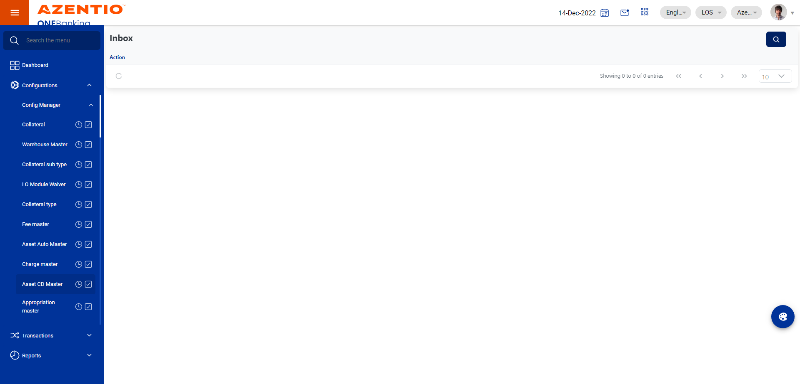And User click the search icon in asset CD master and get the reference id returnstepdefinitions.HooksClass.addScreenshot(io.cucumber.java.Scenario)screenshotAnd User click the submit icon in asset CD master makerstepdefinitions.HooksClass.addScreenshot(io.cucumber.java.Scenario)screenshot
Then User verify the confirmation message in asset CD masterstepdefinitions.HooksClass.addScreenshot(io.cucumber.java.Scenario)screenshotThen User click the inboxmail icon in asset CD masterstepdefinitions.HooksClass.addScreenshot(io.cucumber.java.Scenario)screenshot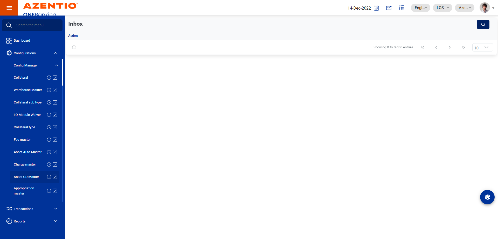And User click the search icon in asset CD master and get the reference id returnstepdefinitions.HooksClass.addScreenshot(io.cucumber.java.Scenario)screenshotAnd User click the submit icon in asset CD master makerstepdefinitions.HooksClass.addScreenshot(io.cucumber.java.Scenario)screenshot And User enter the popup remark and submit the asset CD masterstepdefinitions.HooksClass.addScreenshot(io.cucumber.java.Scenario)screenshotAnd User get confirmation message and checker id in asset CD master returnstepdefinitions.HooksClass.addScreenshot(io.cucumber.java.Scenario)screenshot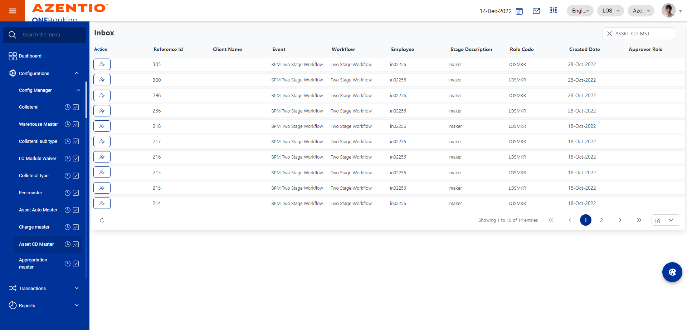And User Logout from applicationstepdefinitions.HooksClass.addScreenshot(io.cucumber.java.Scenario)screenshot
And User enter the popup remark and submit the asset CD masterstepdefinitions.HooksClass.addScreenshot(io.cucumber.java.Scenario)screenshotAnd User get confirmation message and checker id in asset CD master returnstepdefinitions.HooksClass.addScreenshot(io.cucumber.java.Scenario)screenshot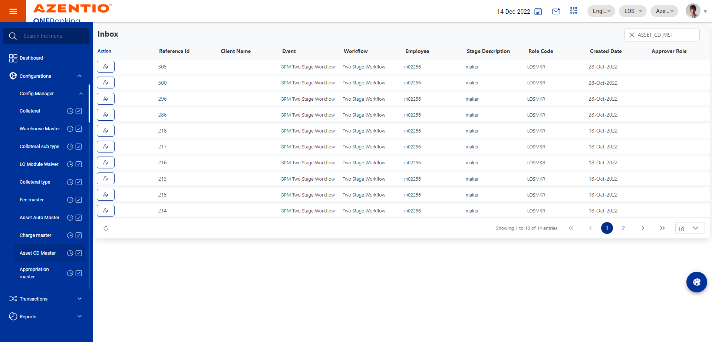And User Logout from applicationstepdefinitions.HooksClass.addScreenshot(io.cucumber.java.Scenario)screenshot PassTo verify the user able to return the record in asset CD masterAnd User get the testdata for Assert CD Master testcase004stepdefinitions.HooksClass.addScreenshot(io.cucumber.java.Scenario)screenshot
PassTo verify the user able to return the record in asset CD masterAnd User get the testdata for Assert CD Master testcase004stepdefinitions.HooksClass.addScreenshot(io.cucumber.java.Scenario)screenshot Given User login as uls checker in asset CD masterstepdefinitions.HooksClass.addScreenshot(io.cucumber.java.Scenario)screenshotAnd User click the inboxicon in asset CD master checkerstepdefinitions.HooksClass.addScreenshot(io.cucumber.java.Scenario)screenshot
Given User login as uls checker in asset CD masterstepdefinitions.HooksClass.addScreenshot(io.cucumber.java.Scenario)screenshotAnd User click the inboxicon in asset CD master checkerstepdefinitions.HooksClass.addScreenshot(io.cucumber.java.Scenario)screenshot And User click the search icon in asset CD master and get the reference id return1stepdefinitions.HooksClass.addScreenshot(io.cucumber.java.Scenario)screenshotAnd User search the respective reference id and click on Action button in asset CD masterstepdefinitions.HooksClass.addScreenshot(io.cucumber.java.Scenario)screenshot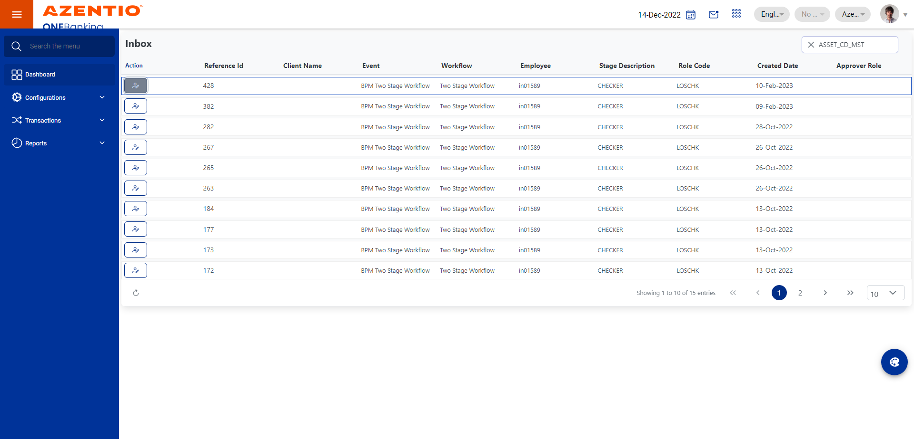And User click the return icon in asset CD master checkerstepdefinitions.HooksClass.addScreenshot(io.cucumber.java.Scenario)screenshot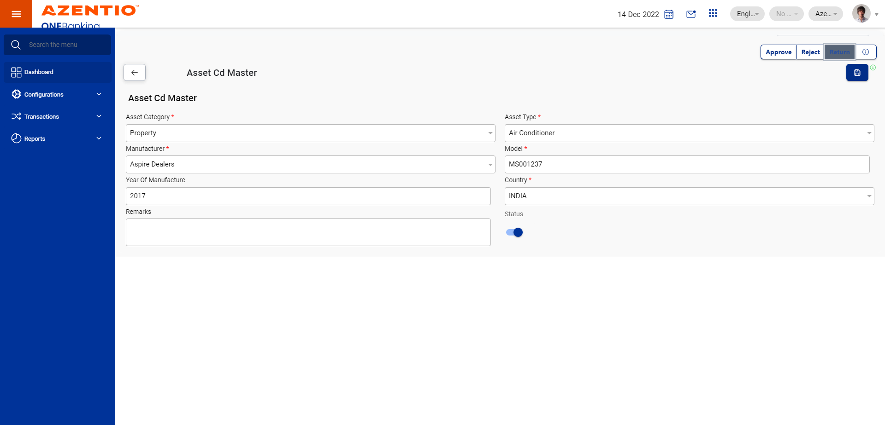And User enter the return remark in asset CD master checkerstepdefinitions.HooksClass.addScreenshot(io.cucumber.java.Scenario)screenshot
And User click the search icon in asset CD master and get the reference id return1stepdefinitions.HooksClass.addScreenshot(io.cucumber.java.Scenario)screenshotAnd User search the respective reference id and click on Action button in asset CD masterstepdefinitions.HooksClass.addScreenshot(io.cucumber.java.Scenario)screenshot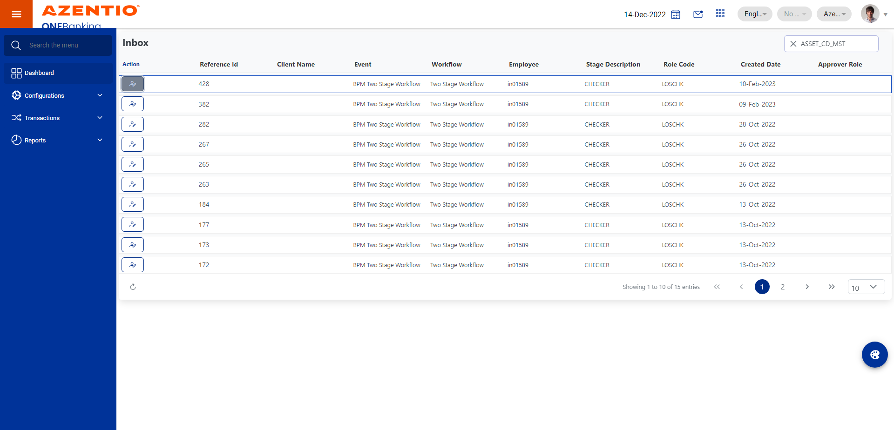And User click the return icon in asset CD master checkerstepdefinitions.HooksClass.addScreenshot(io.cucumber.java.Scenario)screenshot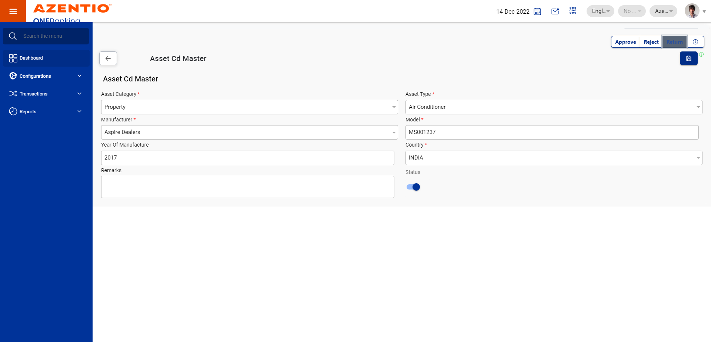And User enter the return remark in asset CD master checkerstepdefinitions.HooksClass.addScreenshot(io.cucumber.java.Scenario)screenshot And User click the final return icon in asset CD master checkerstepdefinitions.HooksClass.addScreenshot(io.cucumber.java.Scenario)screenshot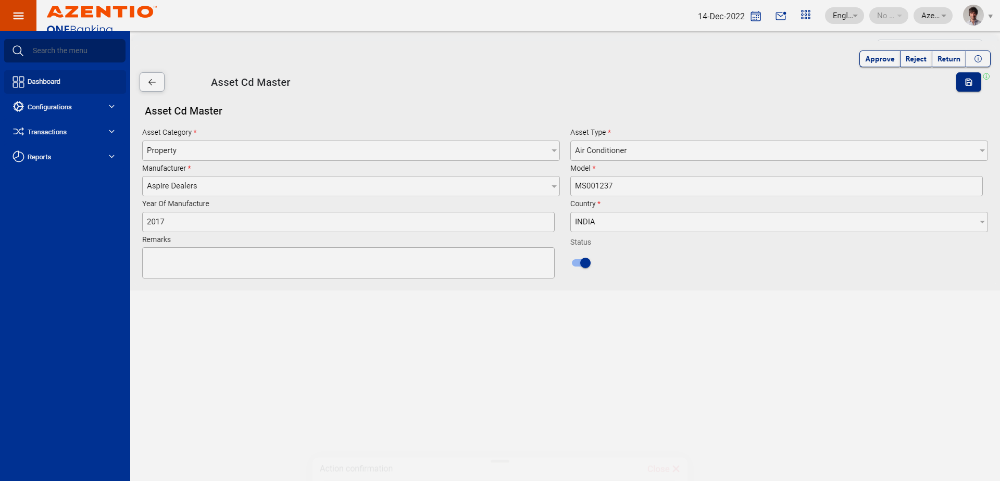Then User verify the Record got Returned in asset CD checkerstepdefinitions.HooksClass.addScreenshot(io.cucumber.java.Scenario)screenshotAnd User Logout from applicationstepdefinitions.HooksClass.addScreenshot(io.cucumber.java.Scenario)screenshotPassTo verify the rejected record shown in asset CD master maker stageAnd User get the testdata for Assert CD Master testcase004stepdefinitions.HooksClass.addScreenshot(io.cucumber.java.Scenario)screenshot
And User click the final return icon in asset CD master checkerstepdefinitions.HooksClass.addScreenshot(io.cucumber.java.Scenario)screenshot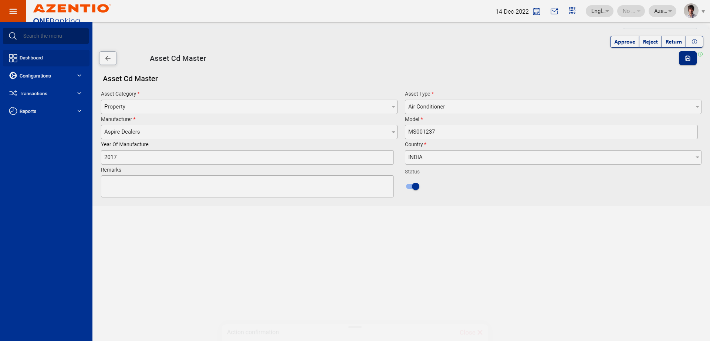Then User verify the Record got Returned in asset CD checkerstepdefinitions.HooksClass.addScreenshot(io.cucumber.java.Scenario)screenshotAnd User Logout from applicationstepdefinitions.HooksClass.addScreenshot(io.cucumber.java.Scenario)screenshotPassTo verify the rejected record shown in asset CD master maker stageAnd User get the testdata for Assert CD Master testcase004stepdefinitions.HooksClass.addScreenshot(io.cucumber.java.Scenario)screenshot Given User login as uls maker in asset CD masterstepdefinitions.HooksClass.addScreenshot(io.cucumber.java.Scenario)screenshot
Given User login as uls maker in asset CD masterstepdefinitions.HooksClass.addScreenshot(io.cucumber.java.Scenario)screenshot Then User click the Configurations in asset auto masterstepdefinitions.HooksClass.addScreenshot(io.cucumber.java.Scenario)screenshotAnd User click the config manager in Bounce masterstepdefinitions.HooksClass.addScreenshot(io.cucumber.java.Scenario)screenshot
Then User click the Configurations in asset auto masterstepdefinitions.HooksClass.addScreenshot(io.cucumber.java.Scenario)screenshotAnd User click the config manager in Bounce masterstepdefinitions.HooksClass.addScreenshot(io.cucumber.java.Scenario)screenshot And Click the Asset CD Master setup eye icon in Asset CD masterstepdefinitions.HooksClass.addScreenshot(io.cucumber.java.Scenario)screenshot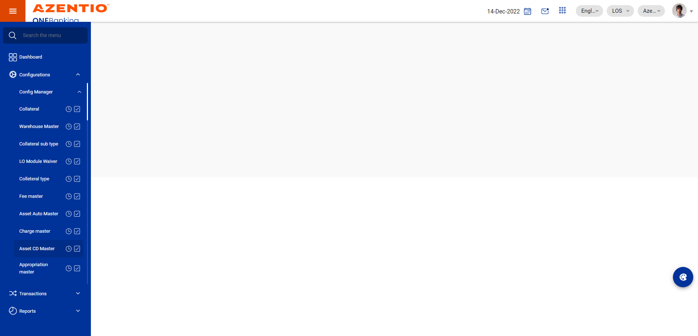Then User click the inboxmail icon in asset CD masterstepdefinitions.HooksClass.addScreenshot(io.cucumber.java.Scenario)screenshotAnd User verify the returned record removed from the system in asset CD masterstepdefinitions.HooksClass.addScreenshot(io.cucumber.java.Scenario)screenshot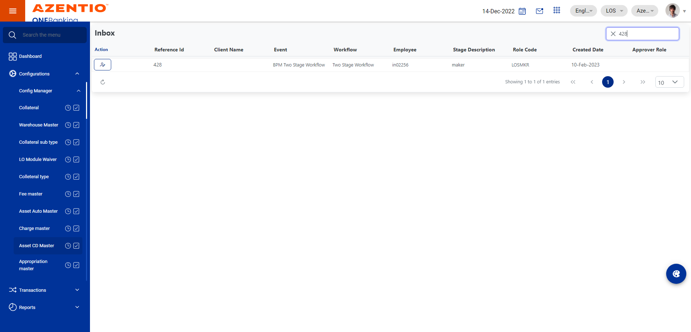And User Logout from applicationstepdefinitions.HooksClass.addScreenshot(io.cucumber.java.Scenario)screenshot
And Click the Asset CD Master setup eye icon in Asset CD masterstepdefinitions.HooksClass.addScreenshot(io.cucumber.java.Scenario)screenshot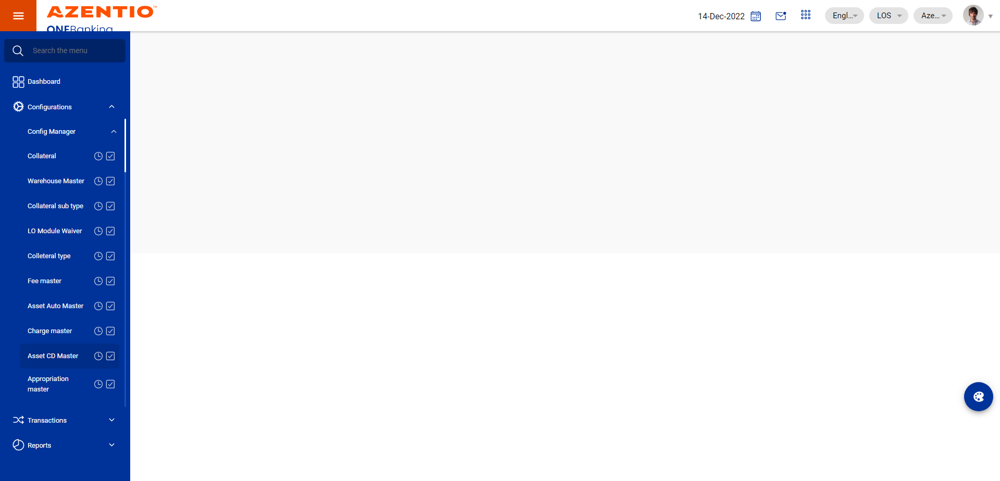Then User click the inboxmail icon in asset CD masterstepdefinitions.HooksClass.addScreenshot(io.cucumber.java.Scenario)screenshotAnd User verify the returned record removed from the system in asset CD masterstepdefinitions.HooksClass.addScreenshot(io.cucumber.java.Scenario)screenshot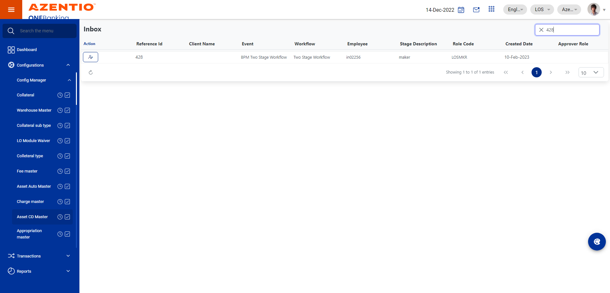And User Logout from applicationstepdefinitions.HooksClass.addScreenshot(io.cucumber.java.Scenario)screenshot PassTo verify the impact when user keep any mandatory field blank and click on save buttonAnd User get the testdata for Assert CD Master testcase005stepdefinitions.HooksClass.addScreenshot(io.cucumber.java.Scenario)screenshot
PassTo verify the impact when user keep any mandatory field blank and click on save buttonAnd User get the testdata for Assert CD Master testcase005stepdefinitions.HooksClass.addScreenshot(io.cucumber.java.Scenario)screenshot Given User login as uls maker in asset CD masterstepdefinitions.HooksClass.addScreenshot(io.cucumber.java.Scenario)screenshot
Given User login as uls maker in asset CD masterstepdefinitions.HooksClass.addScreenshot(io.cucumber.java.Scenario)screenshot Then User click the Configurations in asset auto masterstepdefinitions.HooksClass.addScreenshot(io.cucumber.java.Scenario)screenshot
Then User click the Configurations in asset auto masterstepdefinitions.HooksClass.addScreenshot(io.cucumber.java.Scenario)screenshot And User click the config manager in Bounce masterstepdefinitions.HooksClass.addScreenshot(io.cucumber.java.Scenario)screenshot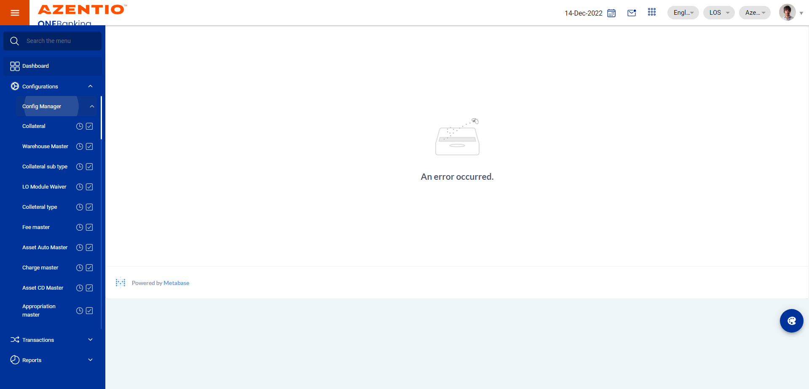And User click the edit icon in asset CD masterstepdefinitions.HooksClass.addScreenshot(io.cucumber.java.Scenario)screenshot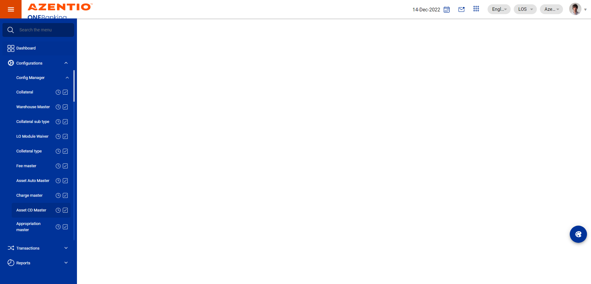And User click the add icon in asset CD masterstepdefinitions.HooksClass.addScreenshot(io.cucumber.java.Scenario)screenshot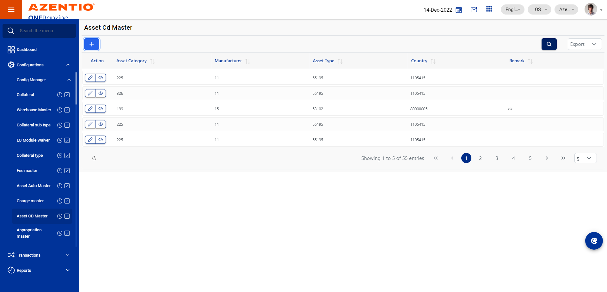And Verify the impact when user enter characters value in numeric field in asset CD masterstepdefinitions.HooksClass.addScreenshot(io.cucumber.java.Scenario)screenshotAnd Verify the impact when user enter numeric value in character field in asset CD masterstepdefinitions.HooksClass.addScreenshot(io.cucumber.java.Scenario)screenshotAnd User click the save button for asset CD masterstepdefinitions.HooksClass.addScreenshot(io.cucumber.java.Scenario)screenshot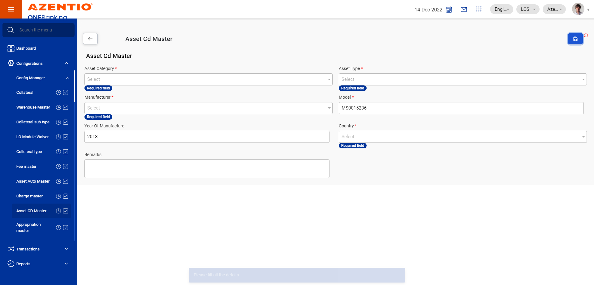And Verify the impact when user keep any mandatory field blank in asset CD masterstepdefinitions.HooksClass.addScreenshot(io.cucumber.java.Scenario)screenshot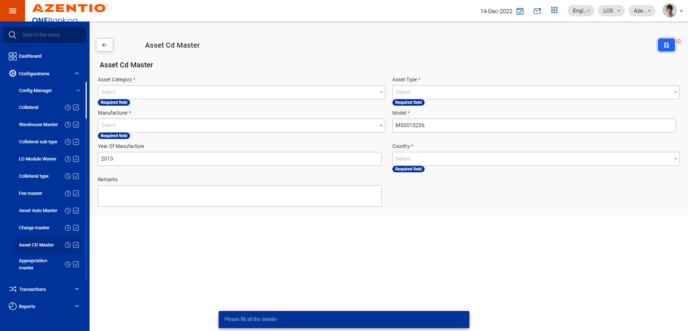And User Logout from applicationstepdefinitions.HooksClass.addScreenshot(io.cucumber.java.Scenario)screenshot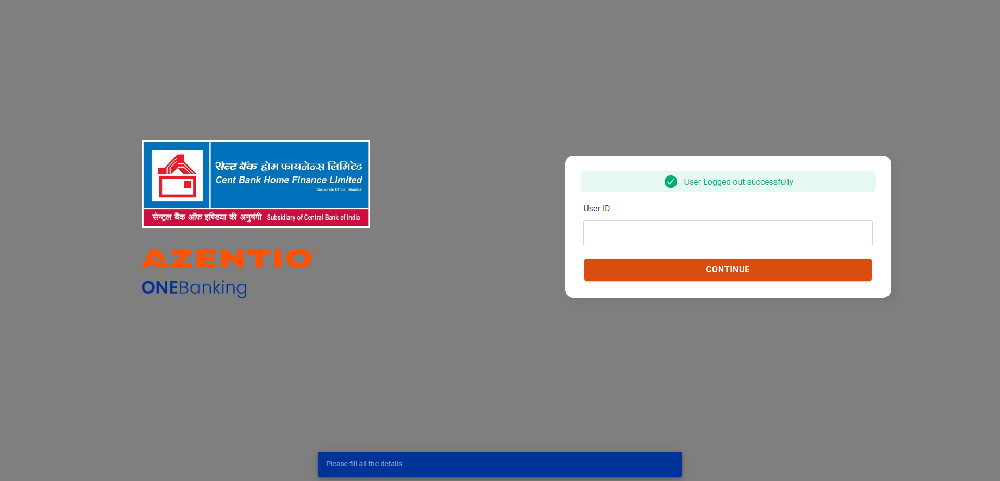PassTo verify the Asset CD Master all flowAnd User get the testdata for Assert CD Master testcase006stepdefinitions.HooksClass.addScreenshot(io.cucumber.java.Scenario)screenshot
And User click the config manager in Bounce masterstepdefinitions.HooksClass.addScreenshot(io.cucumber.java.Scenario)screenshot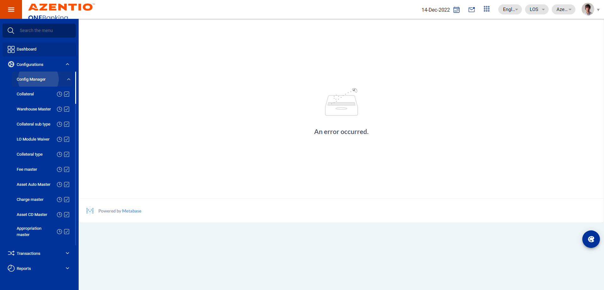And User click the edit icon in asset CD masterstepdefinitions.HooksClass.addScreenshot(io.cucumber.java.Scenario)screenshot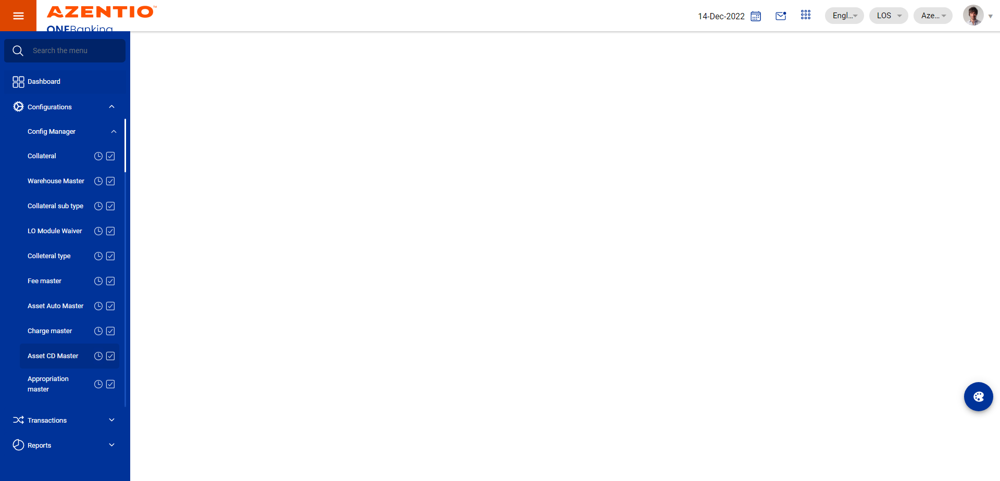And User click the add icon in asset CD masterstepdefinitions.HooksClass.addScreenshot(io.cucumber.java.Scenario)screenshot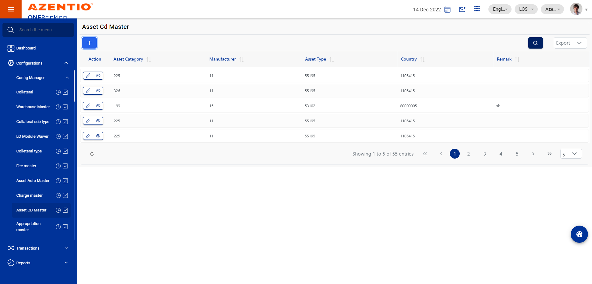And Verify the impact when user enter characters value in numeric field in asset CD masterstepdefinitions.HooksClass.addScreenshot(io.cucumber.java.Scenario)screenshotAnd Verify the impact when user enter numeric value in character field in asset CD masterstepdefinitions.HooksClass.addScreenshot(io.cucumber.java.Scenario)screenshotAnd User click the save button for asset CD masterstepdefinitions.HooksClass.addScreenshot(io.cucumber.java.Scenario)screenshot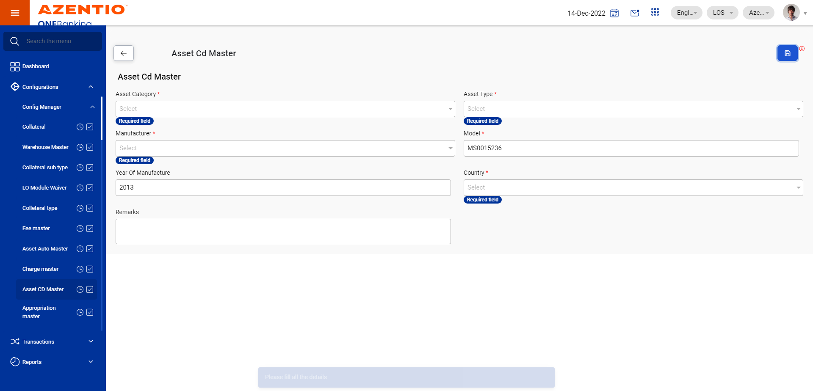And Verify the impact when user keep any mandatory field blank in asset CD masterstepdefinitions.HooksClass.addScreenshot(io.cucumber.java.Scenario)screenshot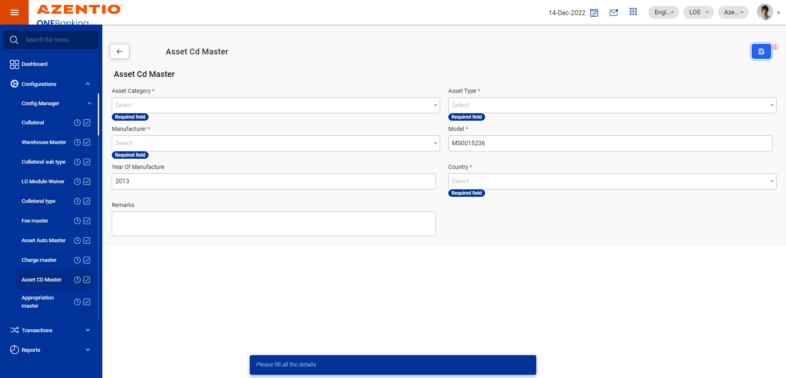And User Logout from applicationstepdefinitions.HooksClass.addScreenshot(io.cucumber.java.Scenario)screenshot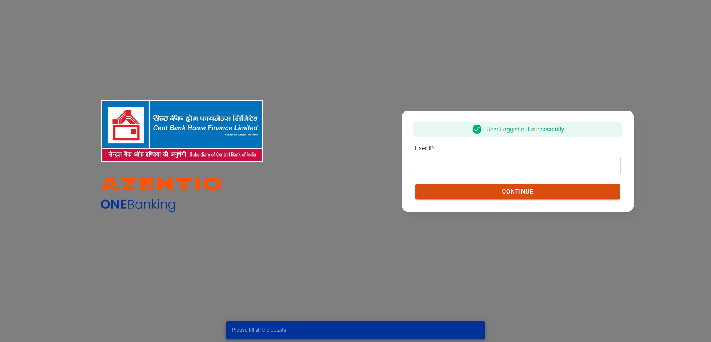PassTo verify the Asset CD Master all flowAnd User get the testdata for Assert CD Master testcase006stepdefinitions.HooksClass.addScreenshot(io.cucumber.java.Scenario)screenshot Given User login as uls maker in asset CD masterstepdefinitions.HooksClass.addScreenshot(io.cucumber.java.Scenario)screenshot
Given User login as uls maker in asset CD masterstepdefinitions.HooksClass.addScreenshot(io.cucumber.java.Scenario)screenshot Then User click the Configurations in asset auto masterstepdefinitions.HooksClass.addScreenshot(io.cucumber.java.Scenario)screenshot
Then User click the Configurations in asset auto masterstepdefinitions.HooksClass.addScreenshot(io.cucumber.java.Scenario)screenshot And User click the config manager in Bounce masterstepdefinitions.HooksClass.addScreenshot(io.cucumber.java.Scenario)screenshot
And User click the config manager in Bounce masterstepdefinitions.HooksClass.addScreenshot(io.cucumber.java.Scenario)screenshot And User click the edit icon in asset CD masterstepdefinitions.HooksClass.addScreenshot(io.cucumber.java.Scenario)screenshotAnd User click the add icon in asset CD masterstepdefinitions.HooksClass.addScreenshot(io.cucumber.java.Scenario)screenshot
And User click the edit icon in asset CD masterstepdefinitions.HooksClass.addScreenshot(io.cucumber.java.Scenario)screenshotAnd User click the add icon in asset CD masterstepdefinitions.HooksClass.addScreenshot(io.cucumber.java.Scenario)screenshot And User enter the value in asset category for asset CD masterstepdefinitions.HooksClass.addScreenshot(io.cucumber.java.Scenario)screenshotAnd User enter the value in asset type for asset CD masterstepdefinitions.HooksClass.addScreenshot(io.cucumber.java.Scenario)screenshot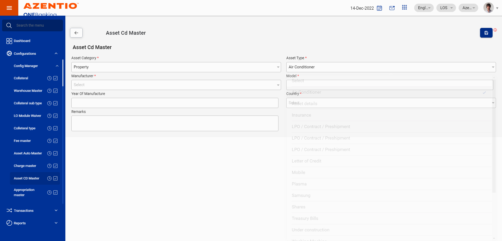And User enter the value in manufacturer for asset CD masterstepdefinitions.HooksClass.addScreenshot(io.cucumber.java.Scenario)screenshotAnd User enter the value in model for asset CD masterstepdefinitions.HooksClass.addScreenshot(io.cucumber.java.Scenario)screenshotAnd User enter the value in year of manufacture for asset CD masterstepdefinitions.HooksClass.addScreenshot(io.cucumber.java.Scenario)screenshotAnd User enter the value in country for asset CD masterstepdefinitions.HooksClass.addScreenshot(io.cucumber.java.Scenario)screenshot
And User enter the value in asset category for asset CD masterstepdefinitions.HooksClass.addScreenshot(io.cucumber.java.Scenario)screenshotAnd User enter the value in asset type for asset CD masterstepdefinitions.HooksClass.addScreenshot(io.cucumber.java.Scenario)screenshot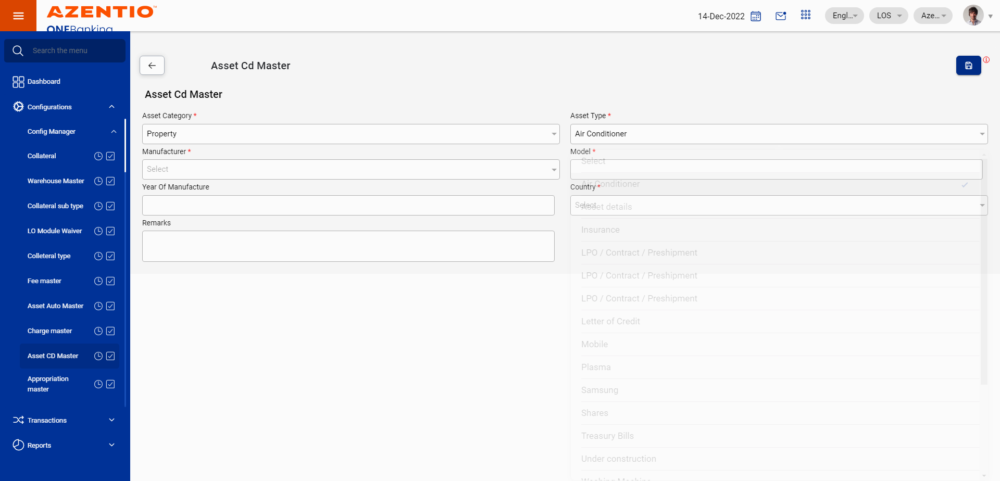And User enter the value in manufacturer for asset CD masterstepdefinitions.HooksClass.addScreenshot(io.cucumber.java.Scenario)screenshotAnd User enter the value in model for asset CD masterstepdefinitions.HooksClass.addScreenshot(io.cucumber.java.Scenario)screenshotAnd User enter the value in year of manufacture for asset CD masterstepdefinitions.HooksClass.addScreenshot(io.cucumber.java.Scenario)screenshotAnd User enter the value in country for asset CD masterstepdefinitions.HooksClass.addScreenshot(io.cucumber.java.Scenario)screenshot And User enter the value in remarks for asset CD masterstepdefinitions.HooksClass.addScreenshot(io.cucumber.java.Scenario)screenshotAnd User click the save button for asset CD masterstepdefinitions.HooksClass.addScreenshot(io.cucumber.java.Scenario)screenshot
And User enter the value in remarks for asset CD masterstepdefinitions.HooksClass.addScreenshot(io.cucumber.java.Scenario)screenshotAnd User click the save button for asset CD masterstepdefinitions.HooksClass.addScreenshot(io.cucumber.java.Scenario)screenshot Then User verify the confirmation message in asset CD masterstepdefinitions.HooksClass.addScreenshot(io.cucumber.java.Scenario)screenshot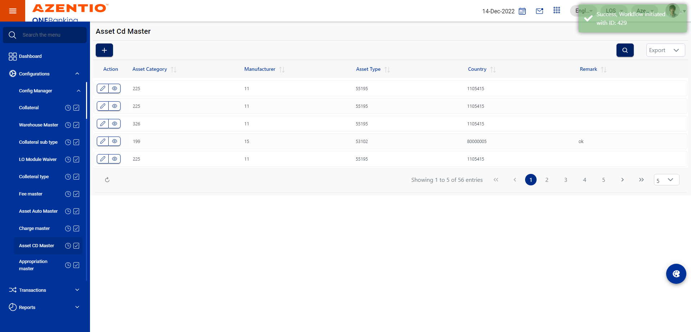Then User click the inboxmail icon in asset CD masterstepdefinitions.HooksClass.addScreenshot(io.cucumber.java.Scenario)screenshot
Then User verify the confirmation message in asset CD masterstepdefinitions.HooksClass.addScreenshot(io.cucumber.java.Scenario)screenshot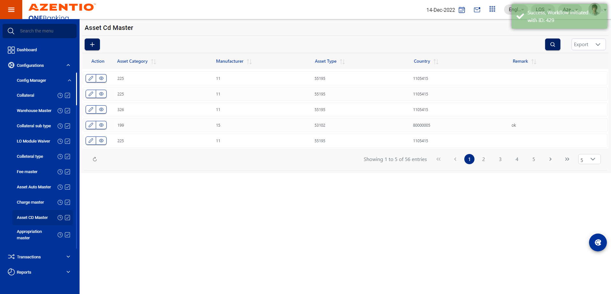Then User click the inboxmail icon in asset CD masterstepdefinitions.HooksClass.addScreenshot(io.cucumber.java.Scenario)screenshot And User click the search icon in asset CD master and get the reference id beforeapprovedstepdefinitions.HooksClass.addScreenshot(io.cucumber.java.Scenario)screenshotAnd User click the submit icon in asset CD master makerstepdefinitions.HooksClass.addScreenshot(io.cucumber.java.Scenario)screenshot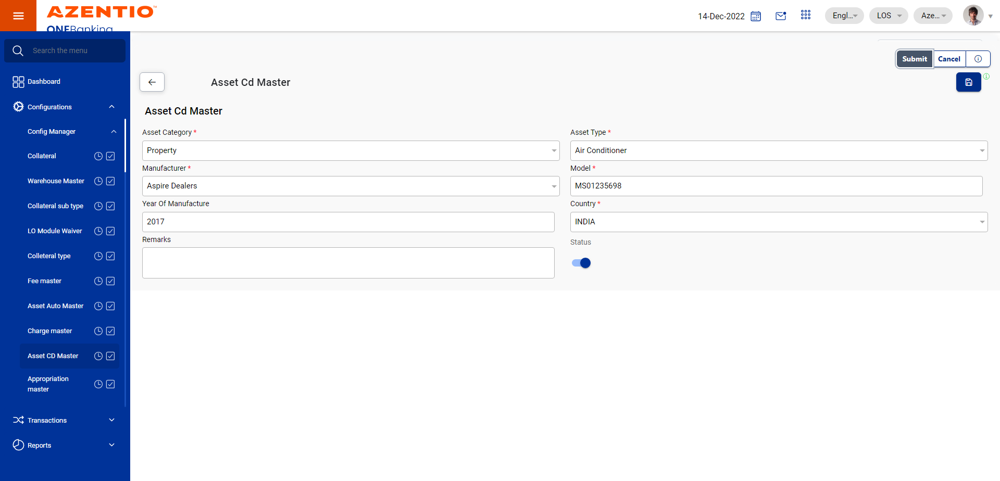And User enter the popup remark and submit the asset CD masterstepdefinitions.HooksClass.addScreenshot(io.cucumber.java.Scenario)screenshotAnd User get confirmation message and checker id in asset CD master beforeapprovedstepdefinitions.HooksClass.addScreenshot(io.cucumber.java.Scenario)screenshotAnd User Logout from applicationstepdefinitions.HooksClass.addScreenshot(io.cucumber.java.Scenario)screenshot
And User click the search icon in asset CD master and get the reference id beforeapprovedstepdefinitions.HooksClass.addScreenshot(io.cucumber.java.Scenario)screenshotAnd User click the submit icon in asset CD master makerstepdefinitions.HooksClass.addScreenshot(io.cucumber.java.Scenario)screenshot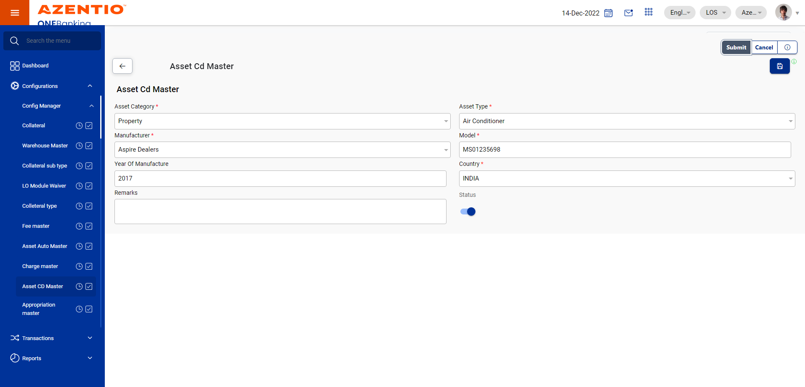And User enter the popup remark and submit the asset CD masterstepdefinitions.HooksClass.addScreenshot(io.cucumber.java.Scenario)screenshotAnd User get confirmation message and checker id in asset CD master beforeapprovedstepdefinitions.HooksClass.addScreenshot(io.cucumber.java.Scenario)screenshotAnd User Logout from applicationstepdefinitions.HooksClass.addScreenshot(io.cucumber.java.Scenario)screenshot PassTo verify user able to approve in checker stage for Asset-CD-MasterAnd User get the testdata for Assert CD Master testcase006stepdefinitions.HooksClass.addScreenshot(io.cucumber.java.Scenario)screenshot
PassTo verify user able to approve in checker stage for Asset-CD-MasterAnd User get the testdata for Assert CD Master testcase006stepdefinitions.HooksClass.addScreenshot(io.cucumber.java.Scenario)screenshot Given User login as uls checker in asset CD masterstepdefinitions.HooksClass.addScreenshot(io.cucumber.java.Scenario)screenshot
Given User login as uls checker in asset CD masterstepdefinitions.HooksClass.addScreenshot(io.cucumber.java.Scenario)screenshot And User click the inboxicon in asset CD master checkerstepdefinitions.HooksClass.addScreenshot(io.cucumber.java.Scenario)screenshot
And User click the inboxicon in asset CD master checkerstepdefinitions.HooksClass.addScreenshot(io.cucumber.java.Scenario)screenshot And User click the search icon in asset CD master and get the reference id beforeapprovedstepdefinitions.HooksClass.addScreenshot(io.cucumber.java.Scenario)screenshotAnd User search the respective reference id and click on Action button in asset CD masterstepdefinitions.HooksClass.addScreenshot(io.cucumber.java.Scenario)screenshotAnd User click on Approve icon in asset CD master checkerstepdefinitions.HooksClass.addScreenshot(io.cucumber.java.Scenario)screenshot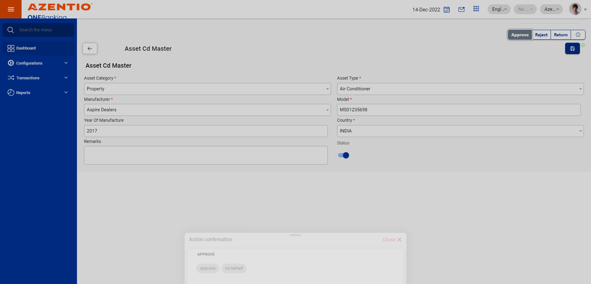And User click the popup remarks in asset CD master checkerstepdefinitions.HooksClass.addScreenshot(io.cucumber.java.Scenario)screenshotThen User enter the popup remarks in asset CD master checkerstepdefinitions.HooksClass.addScreenshot(io.cucumber.java.Scenario)screenshotAnd User click the popup approve in asset CD master checkerstepdefinitions.HooksClass.addScreenshot(io.cucumber.java.Scenario)screenshot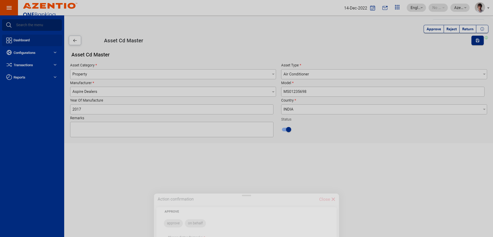Then User verify the Record got Approved in asset CD checkerstepdefinitions.HooksClass.addScreenshot(io.cucumber.java.Scenario)screenshot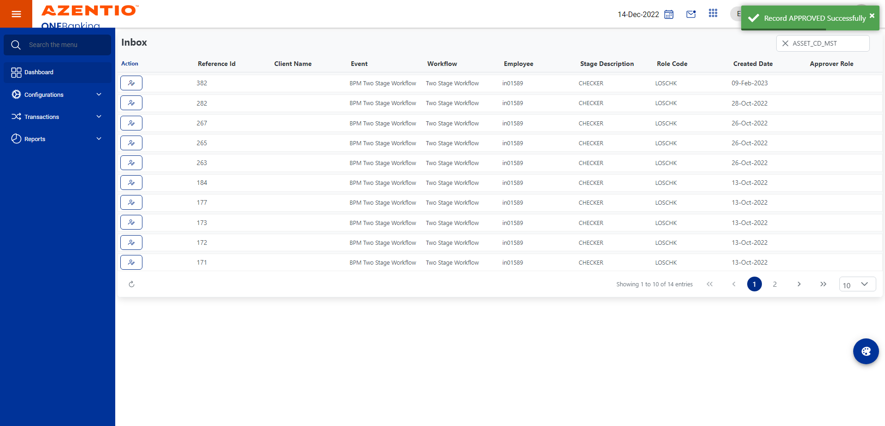And User Logout from applicationstepdefinitions.HooksClass.addScreenshot(io.cucumber.java.Scenario)screenshotPassTo verify system allow user to modify the Personal details before approve the recordAnd User get the testdata for Assert CD Master testcase006D2stepdefinitions.HooksClass.addScreenshot(io.cucumber.java.Scenario)screenshot
And User click the search icon in asset CD master and get the reference id beforeapprovedstepdefinitions.HooksClass.addScreenshot(io.cucumber.java.Scenario)screenshotAnd User search the respective reference id and click on Action button in asset CD masterstepdefinitions.HooksClass.addScreenshot(io.cucumber.java.Scenario)screenshotAnd User click on Approve icon in asset CD master checkerstepdefinitions.HooksClass.addScreenshot(io.cucumber.java.Scenario)screenshot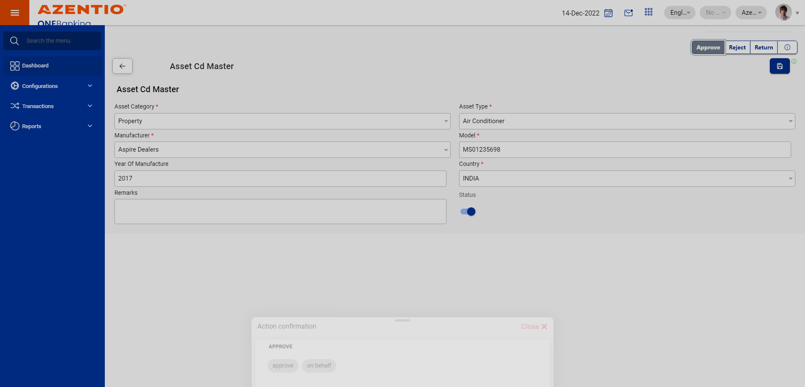And User click the popup remarks in asset CD master checkerstepdefinitions.HooksClass.addScreenshot(io.cucumber.java.Scenario)screenshotThen User enter the popup remarks in asset CD master checkerstepdefinitions.HooksClass.addScreenshot(io.cucumber.java.Scenario)screenshotAnd User click the popup approve in asset CD master checkerstepdefinitions.HooksClass.addScreenshot(io.cucumber.java.Scenario)screenshot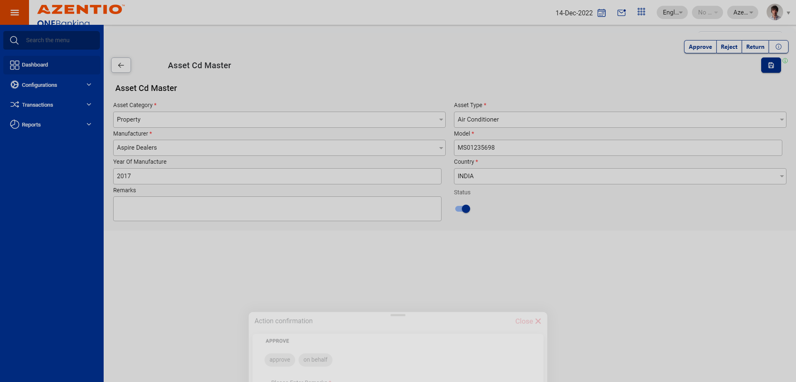Then User verify the Record got Approved in asset CD checkerstepdefinitions.HooksClass.addScreenshot(io.cucumber.java.Scenario)screenshot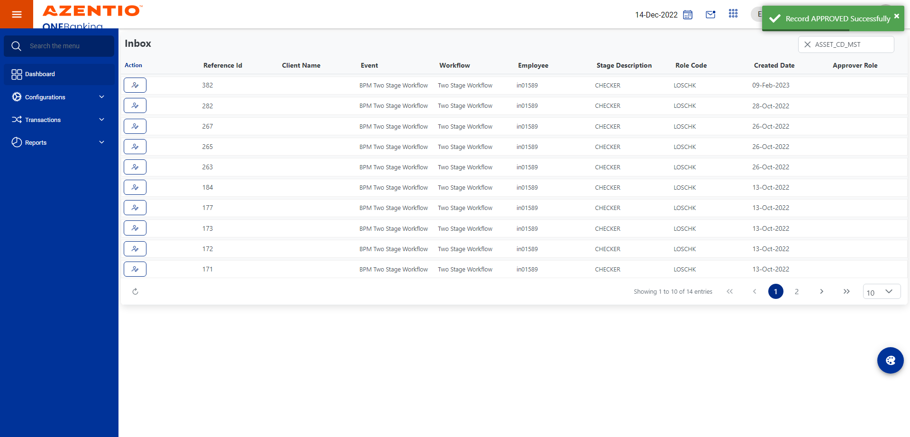And User Logout from applicationstepdefinitions.HooksClass.addScreenshot(io.cucumber.java.Scenario)screenshotPassTo verify system allow user to modify the Personal details before approve the recordAnd User get the testdata for Assert CD Master testcase006D2stepdefinitions.HooksClass.addScreenshot(io.cucumber.java.Scenario)screenshot Given User login as uls maker in asset CD masterstepdefinitions.HooksClass.addScreenshot(io.cucumber.java.Scenario)screenshot
Given User login as uls maker in asset CD masterstepdefinitions.HooksClass.addScreenshot(io.cucumber.java.Scenario)screenshot Then User click the Configurations in asset auto masterstepdefinitions.HooksClass.addScreenshot(io.cucumber.java.Scenario)screenshotAnd User click the config manager in Bounce masterstepdefinitions.HooksClass.addScreenshot(io.cucumber.java.Scenario)screenshotAnd Click the Asset CD Master setup eye icon in Asset CD masterstepdefinitions.HooksClass.addScreenshot(io.cucumber.java.Scenario)screenshot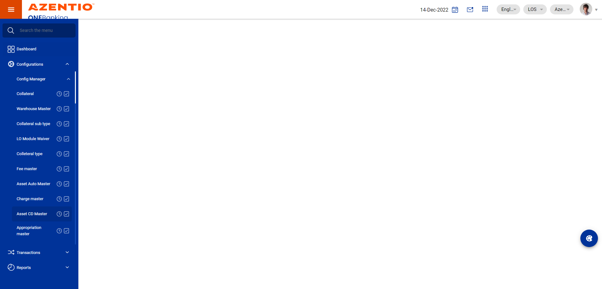And Click the listview pencil icon in asset CD masterstepdefinitions.HooksClass.addScreenshot(io.cucumber.java.Scenario)screenshot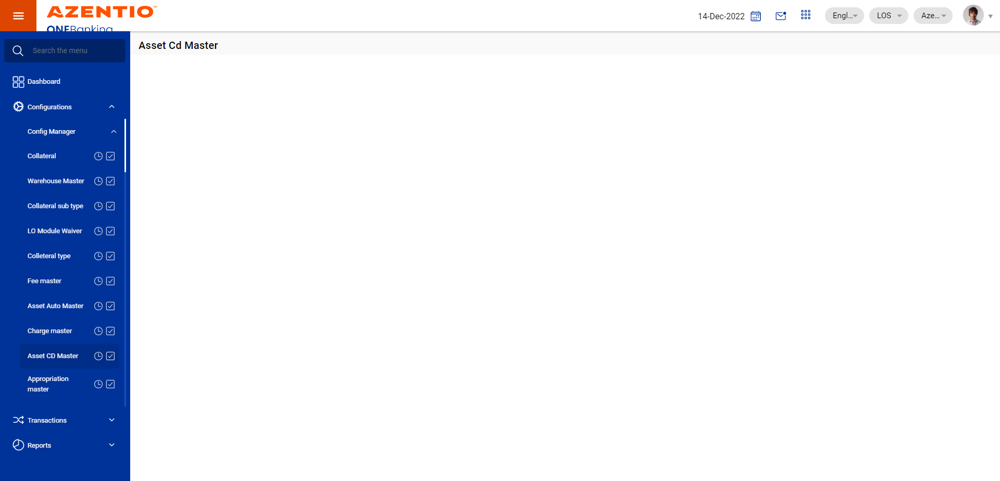And User update the assetcategory in asset CD masterstepdefinitions.HooksClass.addScreenshot(io.cucumber.java.Scenario)screenshot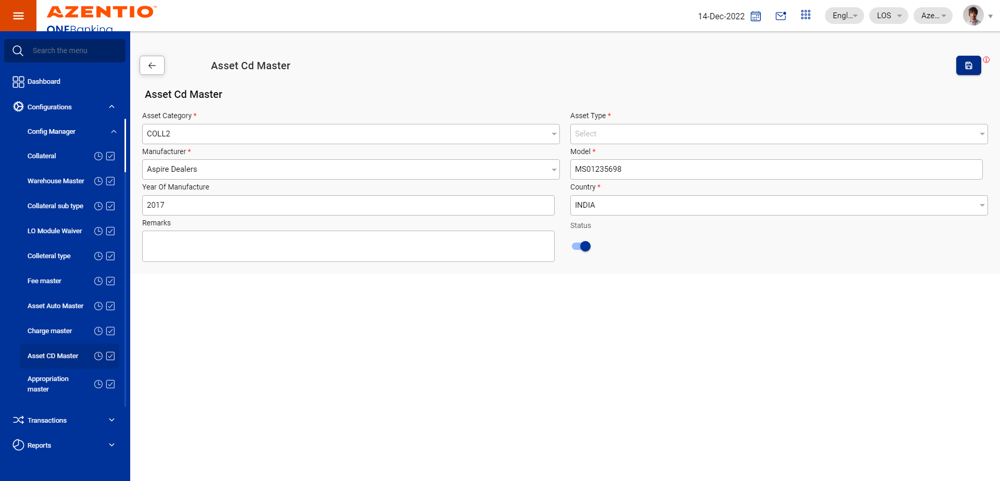And User update the model in asset CD masterstepdefinitions.HooksClass.addScreenshot(io.cucumber.java.Scenario)screenshotAnd User click the update button for asset CD masterstepdefinitions.HooksClass.addScreenshot(io.cucumber.java.Scenario)screenshot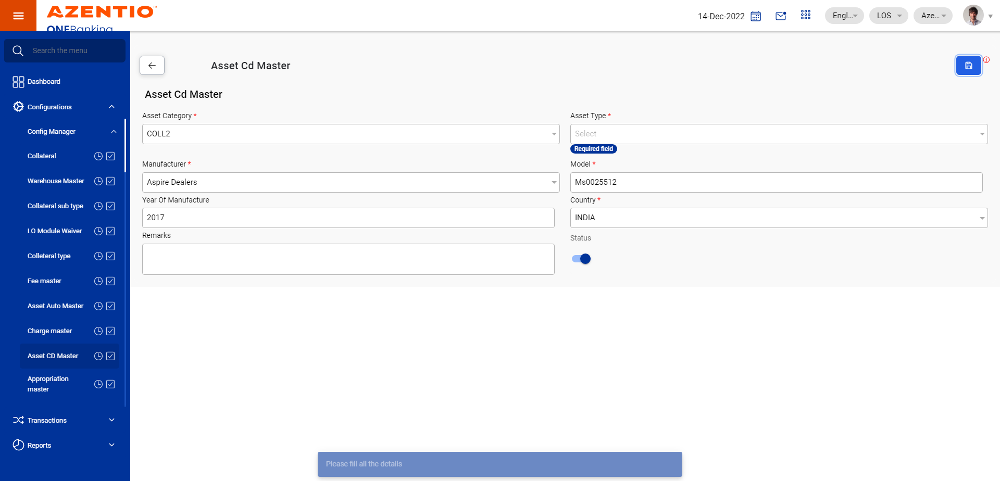And User verify while modification keep any mandatory field blank and click on save buttonstepdefinitions.HooksClass.addScreenshot(io.cucumber.java.Scenario)screenshot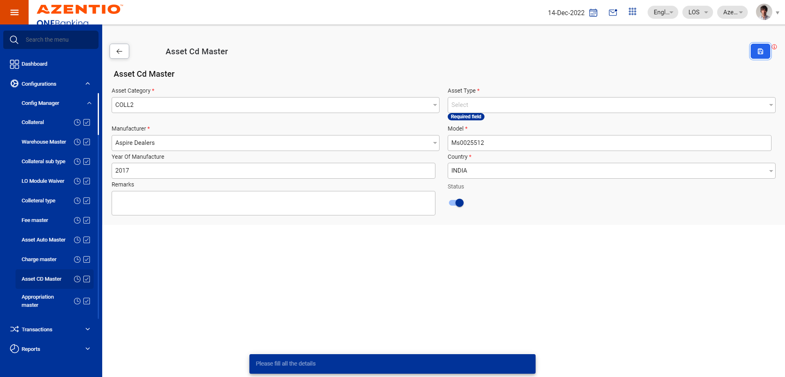And User update the assettype in asset CD masterstepdefinitions.HooksClass.addScreenshot(io.cucumber.java.Scenario)screenshotAnd User click the update button for asset CD masterstepdefinitions.HooksClass.addScreenshot(io.cucumber.java.Scenario)screenshot
Then User click the Configurations in asset auto masterstepdefinitions.HooksClass.addScreenshot(io.cucumber.java.Scenario)screenshotAnd User click the config manager in Bounce masterstepdefinitions.HooksClass.addScreenshot(io.cucumber.java.Scenario)screenshotAnd Click the Asset CD Master setup eye icon in Asset CD masterstepdefinitions.HooksClass.addScreenshot(io.cucumber.java.Scenario)screenshot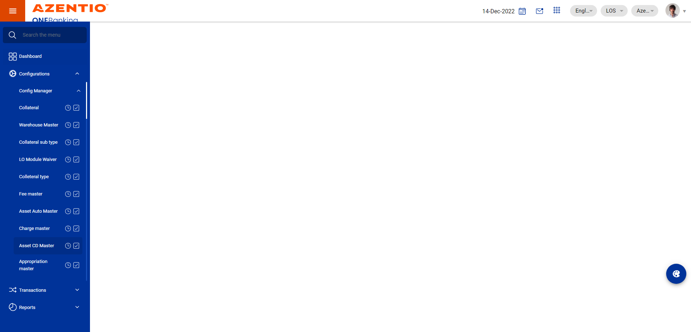And Click the listview pencil icon in asset CD masterstepdefinitions.HooksClass.addScreenshot(io.cucumber.java.Scenario)screenshot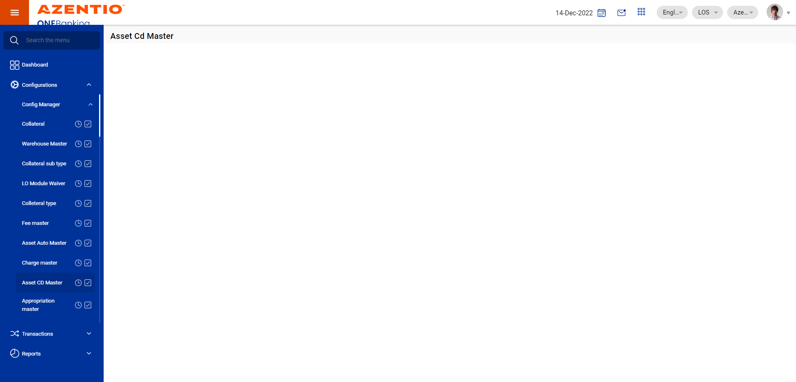And User update the assetcategory in asset CD masterstepdefinitions.HooksClass.addScreenshot(io.cucumber.java.Scenario)screenshot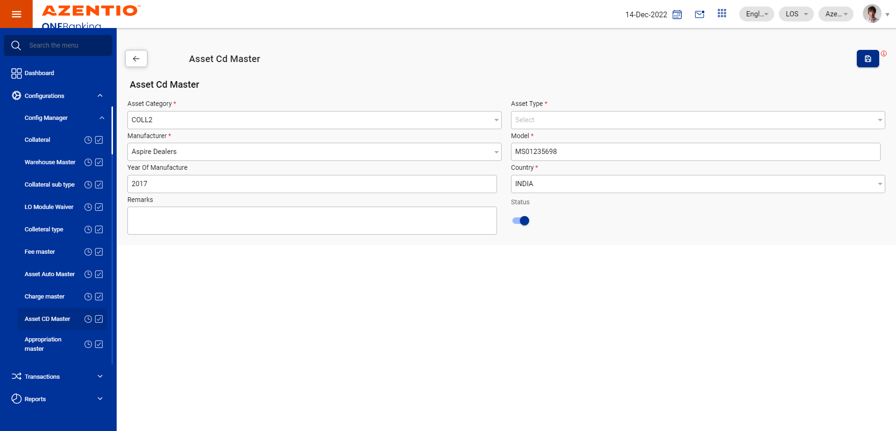And User update the model in asset CD masterstepdefinitions.HooksClass.addScreenshot(io.cucumber.java.Scenario)screenshotAnd User click the update button for asset CD masterstepdefinitions.HooksClass.addScreenshot(io.cucumber.java.Scenario)screenshot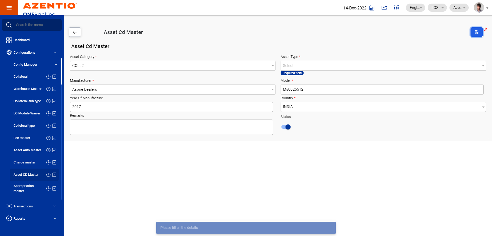And User verify while modification keep any mandatory field blank and click on save buttonstepdefinitions.HooksClass.addScreenshot(io.cucumber.java.Scenario)screenshot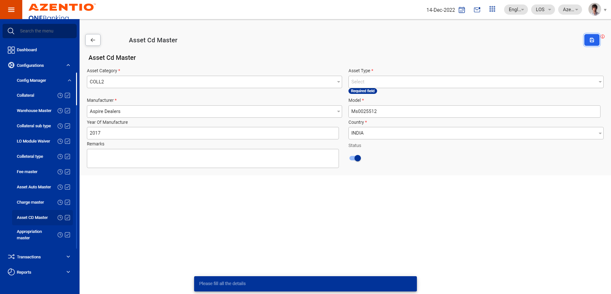And User update the assettype in asset CD masterstepdefinitions.HooksClass.addScreenshot(io.cucumber.java.Scenario)screenshotAnd User click the update button for asset CD masterstepdefinitions.HooksClass.addScreenshot(io.cucumber.java.Scenario)screenshot And User Logout from applicationstepdefinitions.HooksClass.addScreenshot(io.cucumber.java.Scenario)screenshot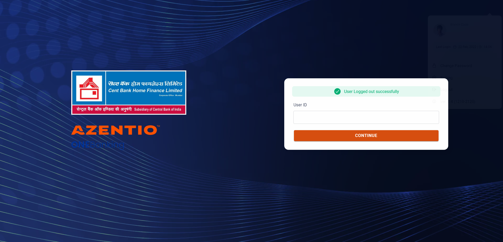PassTo verify the Asset CD Master all flowAnd User get the testdata for Assert CD Master testcase001stepdefinitions.HooksClass.addScreenshot(io.cucumber.java.Scenario)screenshot
And User Logout from applicationstepdefinitions.HooksClass.addScreenshot(io.cucumber.java.Scenario)screenshot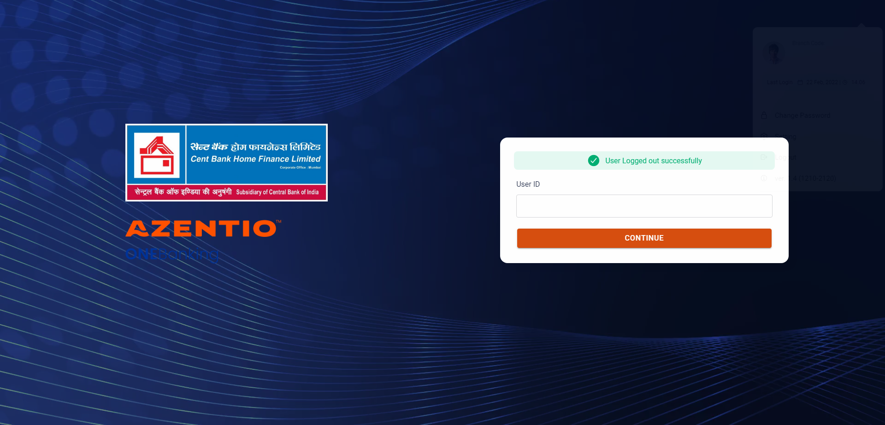PassTo verify the Asset CD Master all flowAnd User get the testdata for Assert CD Master testcase001stepdefinitions.HooksClass.addScreenshot(io.cucumber.java.Scenario)screenshot Given User login as uls maker in asset CD masterstepdefinitions.HooksClass.addScreenshot(io.cucumber.java.Scenario)screenshot
Given User login as uls maker in asset CD masterstepdefinitions.HooksClass.addScreenshot(io.cucumber.java.Scenario)screenshot Then User click the Configurations in asset auto masterstepdefinitions.HooksClass.addScreenshot(io.cucumber.java.Scenario)screenshotAnd User click the config manager in Bounce masterstepdefinitions.HooksClass.addScreenshot(io.cucumber.java.Scenario)screenshotAnd User click the edit icon in asset CD masterstepdefinitions.HooksClass.addScreenshot(io.cucumber.java.Scenario)screenshotAnd User click the add icon in asset CD masterstepdefinitions.HooksClass.addScreenshot(io.cucumber.java.Scenario)screenshotAnd User enter the value in asset category for asset CD masterstepdefinitions.HooksClass.addScreenshot(io.cucumber.java.Scenario)screenshotAnd User enter the value in asset type for asset CD masterstepdefinitions.HooksClass.addScreenshot(io.cucumber.java.Scenario)screenshot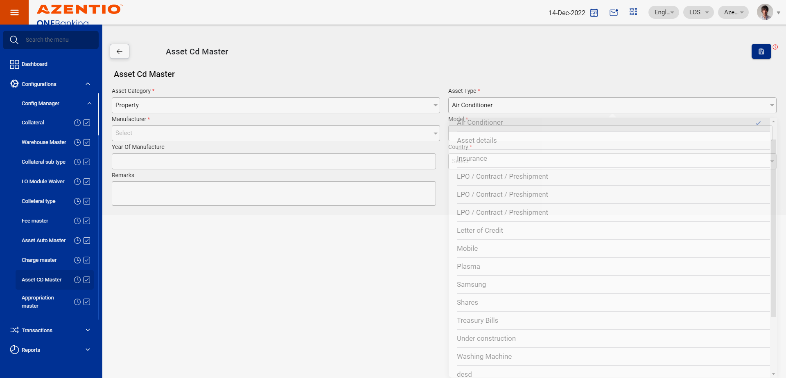And User enter the value in manufacturer for asset CD masterstepdefinitions.HooksClass.addScreenshot(io.cucumber.java.Scenario)screenshotAnd User enter the value in model for asset CD masterstepdefinitions.HooksClass.addScreenshot(io.cucumber.java.Scenario)screenshotAnd User enter the value in year of manufacture for asset CD masterstepdefinitions.HooksClass.addScreenshot(io.cucumber.java.Scenario)screenshot
Then User click the Configurations in asset auto masterstepdefinitions.HooksClass.addScreenshot(io.cucumber.java.Scenario)screenshotAnd User click the config manager in Bounce masterstepdefinitions.HooksClass.addScreenshot(io.cucumber.java.Scenario)screenshotAnd User click the edit icon in asset CD masterstepdefinitions.HooksClass.addScreenshot(io.cucumber.java.Scenario)screenshotAnd User click the add icon in asset CD masterstepdefinitions.HooksClass.addScreenshot(io.cucumber.java.Scenario)screenshotAnd User enter the value in asset category for asset CD masterstepdefinitions.HooksClass.addScreenshot(io.cucumber.java.Scenario)screenshotAnd User enter the value in asset type for asset CD masterstepdefinitions.HooksClass.addScreenshot(io.cucumber.java.Scenario)screenshot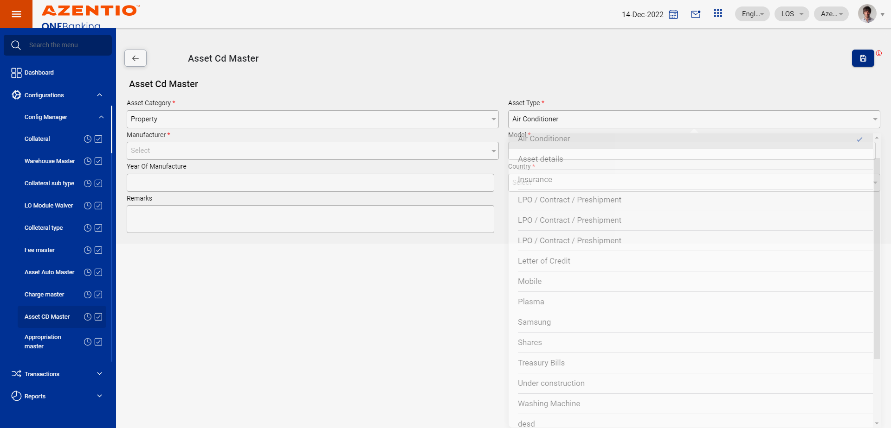And User enter the value in manufacturer for asset CD masterstepdefinitions.HooksClass.addScreenshot(io.cucumber.java.Scenario)screenshotAnd User enter the value in model for asset CD masterstepdefinitions.HooksClass.addScreenshot(io.cucumber.java.Scenario)screenshotAnd User enter the value in year of manufacture for asset CD masterstepdefinitions.HooksClass.addScreenshot(io.cucumber.java.Scenario)screenshot And User enter the value in country for asset CD masterstepdefinitions.HooksClass.addScreenshot(io.cucumber.java.Scenario)screenshotAnd User enter the value in remarks for asset CD masterstepdefinitions.HooksClass.addScreenshot(io.cucumber.java.Scenario)screenshotAnd User click the save button for asset CD masterstepdefinitions.HooksClass.addScreenshot(io.cucumber.java.Scenario)screenshot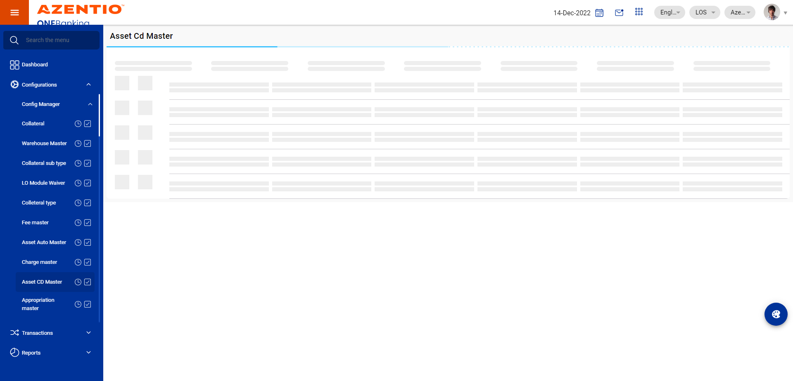Then User verify the confirmation message in asset CD masterstepdefinitions.HooksClass.addScreenshot(io.cucumber.java.Scenario)screenshot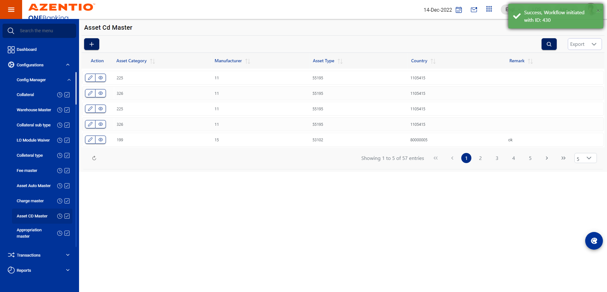Then User click the inboxmail icon in asset CD masterstepdefinitions.HooksClass.addScreenshot(io.cucumber.java.Scenario)screenshotAnd User click the search icon in asset CD master and get the reference idstepdefinitions.HooksClass.addScreenshot(io.cucumber.java.Scenario)screenshotAnd User click the submit icon in asset CD master makerstepdefinitions.HooksClass.addScreenshot(io.cucumber.java.Scenario)screenshot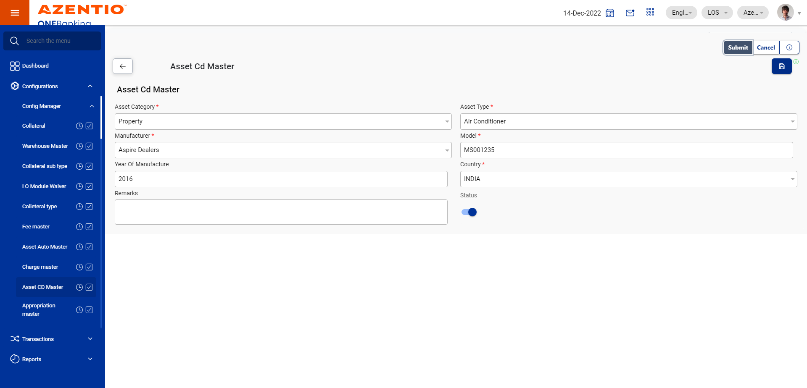And User enter the popup remark and submit the asset CD masterstepdefinitions.HooksClass.addScreenshot(io.cucumber.java.Scenario)screenshot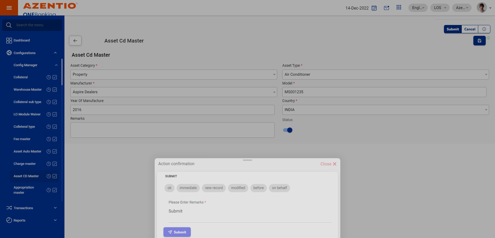And User get confirmation message and checker id in asset CD masterstepdefinitions.HooksClass.addScreenshot(io.cucumber.java.Scenario)screenshot
And User enter the value in country for asset CD masterstepdefinitions.HooksClass.addScreenshot(io.cucumber.java.Scenario)screenshotAnd User enter the value in remarks for asset CD masterstepdefinitions.HooksClass.addScreenshot(io.cucumber.java.Scenario)screenshotAnd User click the save button for asset CD masterstepdefinitions.HooksClass.addScreenshot(io.cucumber.java.Scenario)screenshot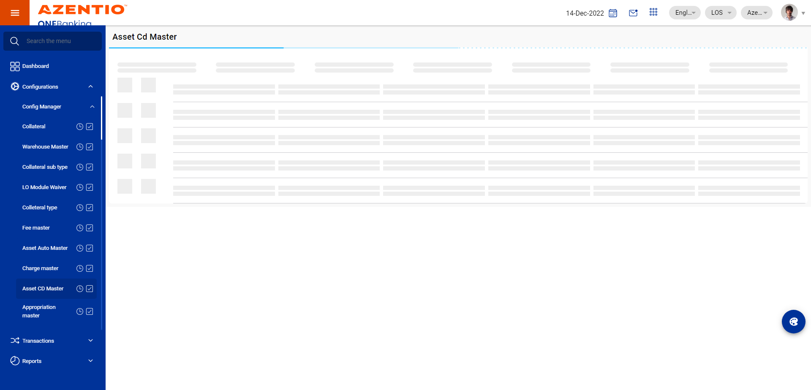Then User verify the confirmation message in asset CD masterstepdefinitions.HooksClass.addScreenshot(io.cucumber.java.Scenario)screenshot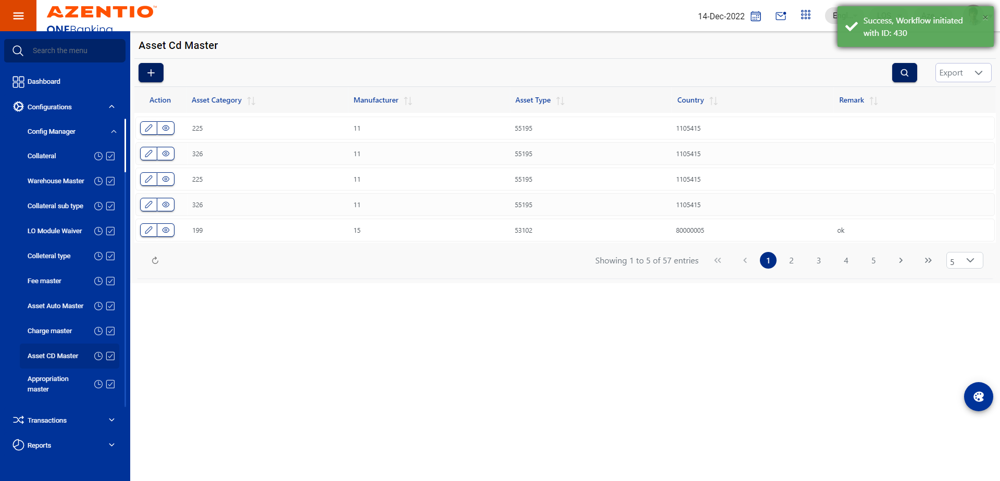Then User click the inboxmail icon in asset CD masterstepdefinitions.HooksClass.addScreenshot(io.cucumber.java.Scenario)screenshotAnd User click the search icon in asset CD master and get the reference idstepdefinitions.HooksClass.addScreenshot(io.cucumber.java.Scenario)screenshotAnd User click the submit icon in asset CD master makerstepdefinitions.HooksClass.addScreenshot(io.cucumber.java.Scenario)screenshot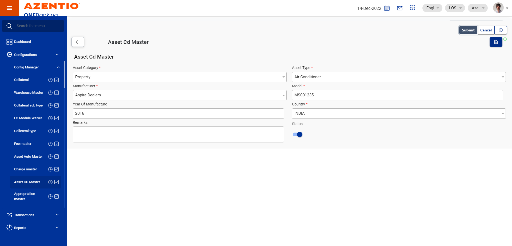And User enter the popup remark and submit the asset CD masterstepdefinitions.HooksClass.addScreenshot(io.cucumber.java.Scenario)screenshot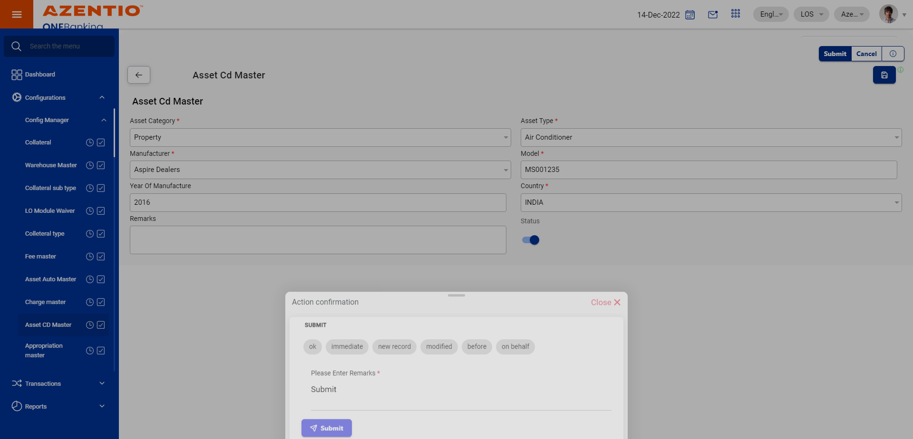And User get confirmation message and checker id in asset CD masterstepdefinitions.HooksClass.addScreenshot(io.cucumber.java.Scenario)screenshot And User Logout from applicationstepdefinitions.HooksClass.addScreenshot(io.cucumber.java.Scenario)screenshotPassTo verify user able to approve in checker stage for Asset-CD-MasterAnd User get the testdata for Assert CD Master testcase001stepdefinitions.HooksClass.addScreenshot(io.cucumber.java.Scenario)screenshot
And User Logout from applicationstepdefinitions.HooksClass.addScreenshot(io.cucumber.java.Scenario)screenshotPassTo verify user able to approve in checker stage for Asset-CD-MasterAnd User get the testdata for Assert CD Master testcase001stepdefinitions.HooksClass.addScreenshot(io.cucumber.java.Scenario)screenshot Given User login as uls checker in asset CD masterstepdefinitions.HooksClass.addScreenshot(io.cucumber.java.Scenario)screenshot
Given User login as uls checker in asset CD masterstepdefinitions.HooksClass.addScreenshot(io.cucumber.java.Scenario)screenshot And User click the inboxicon in asset CD master checkerstepdefinitions.HooksClass.addScreenshot(io.cucumber.java.Scenario)screenshot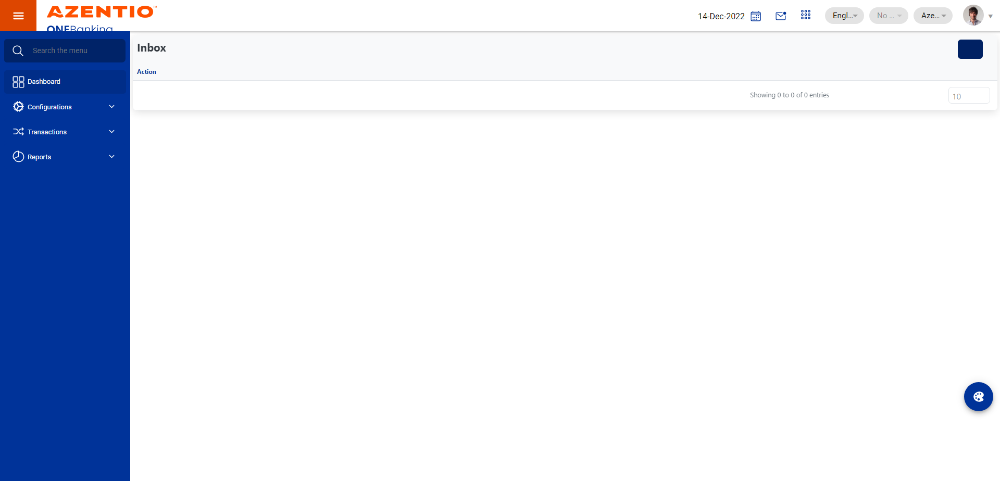And User click the search icon in asset CD master and get the reference idstepdefinitions.HooksClass.addScreenshot(io.cucumber.java.Scenario)screenshotAnd User search the respective reference id and click on Action button in asset CD masterstepdefinitions.HooksClass.addScreenshot(io.cucumber.java.Scenario)screenshot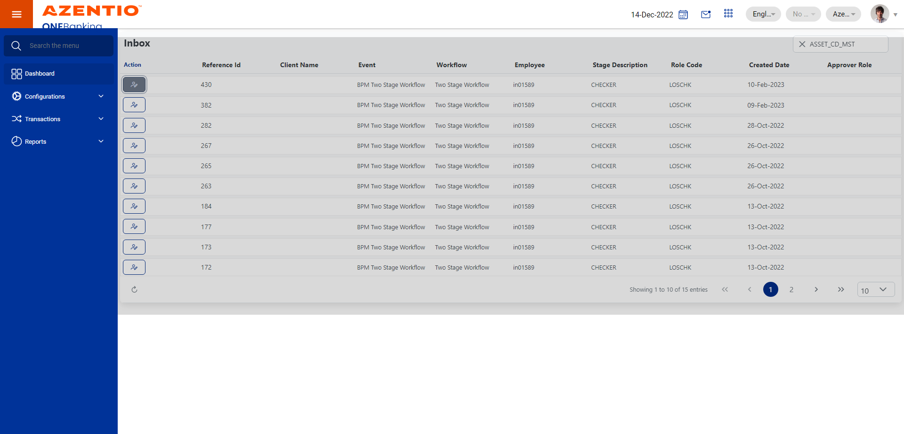And User click on Approve icon in asset CD master checkerstepdefinitions.HooksClass.addScreenshot(io.cucumber.java.Scenario)screenshotAnd User click the popup remarks in asset CD master checkerstepdefinitions.HooksClass.addScreenshot(io.cucumber.java.Scenario)screenshot
And User click the inboxicon in asset CD master checkerstepdefinitions.HooksClass.addScreenshot(io.cucumber.java.Scenario)screenshot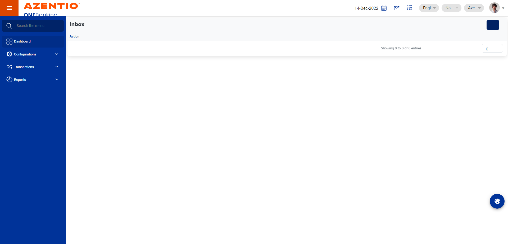And User click the search icon in asset CD master and get the reference idstepdefinitions.HooksClass.addScreenshot(io.cucumber.java.Scenario)screenshotAnd User search the respective reference id and click on Action button in asset CD masterstepdefinitions.HooksClass.addScreenshot(io.cucumber.java.Scenario)screenshot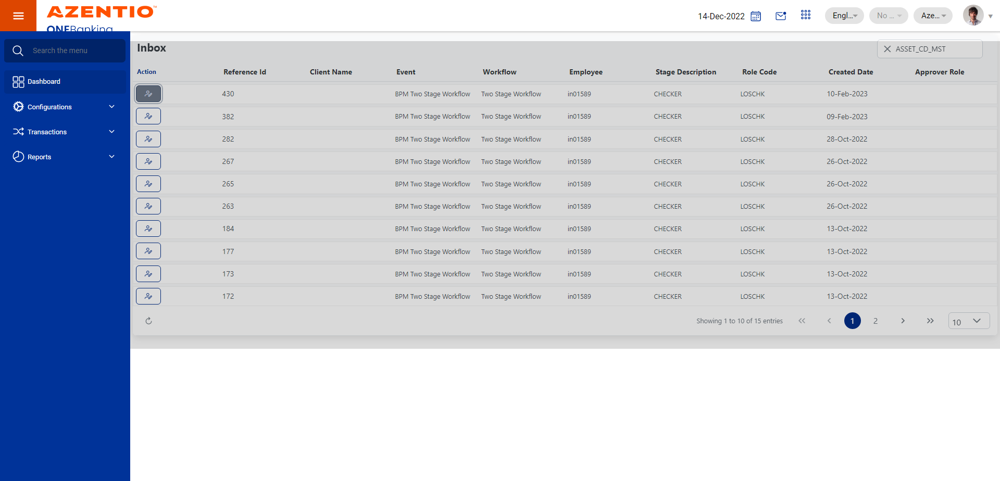And User click on Approve icon in asset CD master checkerstepdefinitions.HooksClass.addScreenshot(io.cucumber.java.Scenario)screenshotAnd User click the popup remarks in asset CD master checkerstepdefinitions.HooksClass.addScreenshot(io.cucumber.java.Scenario)screenshot Then User enter the popup remarks in asset CD master checkerstepdefinitions.HooksClass.addScreenshot(io.cucumber.java.Scenario)screenshotAnd User click the popup approve in asset CD master checkerstepdefinitions.HooksClass.addScreenshot(io.cucumber.java.Scenario)screenshot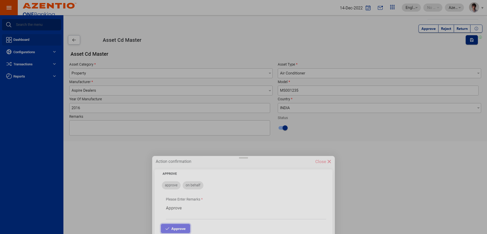Then User verify the Record got Approved in asset CD checkerstepdefinitions.HooksClass.addScreenshot(io.cucumber.java.Scenario)screenshotAnd User Logout from applicationstepdefinitions.HooksClass.addScreenshot(io.cucumber.java.Scenario)screenshot
Then User enter the popup remarks in asset CD master checkerstepdefinitions.HooksClass.addScreenshot(io.cucumber.java.Scenario)screenshotAnd User click the popup approve in asset CD master checkerstepdefinitions.HooksClass.addScreenshot(io.cucumber.java.Scenario)screenshot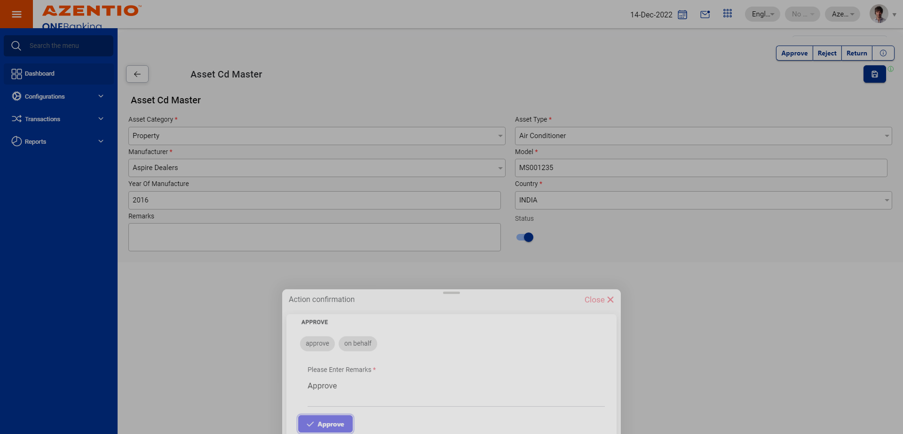Then User verify the Record got Approved in asset CD checkerstepdefinitions.HooksClass.addScreenshot(io.cucumber.java.Scenario)screenshotAnd User Logout from applicationstepdefinitions.HooksClass.addScreenshot(io.cucumber.java.Scenario)screenshot PassTo verify the functionality of Submit button at Maker stageAnd User get the testdata for Assert CD Master testcase007stepdefinitions.HooksClass.addScreenshot(io.cucumber.java.Scenario)screenshot
PassTo verify the functionality of Submit button at Maker stageAnd User get the testdata for Assert CD Master testcase007stepdefinitions.HooksClass.addScreenshot(io.cucumber.java.Scenario)screenshot Given User login as uls maker in asset CD masterstepdefinitions.HooksClass.addScreenshot(io.cucumber.java.Scenario)screenshot
Given User login as uls maker in asset CD masterstepdefinitions.HooksClass.addScreenshot(io.cucumber.java.Scenario)screenshot Then User click the Configurations in asset auto masterstepdefinitions.HooksClass.addScreenshot(io.cucumber.java.Scenario)screenshotAnd User click the config manager in Bounce masterstepdefinitions.HooksClass.addScreenshot(io.cucumber.java.Scenario)screenshotAnd Click the Asset CD Master setup eye icon in Asset CD masterstepdefinitions.HooksClass.addScreenshot(io.cucumber.java.Scenario)screenshotAnd Click the listview pencil icon in asset CD masterstepdefinitions.HooksClass.addScreenshot(io.cucumber.java.Scenario)screenshot
Then User click the Configurations in asset auto masterstepdefinitions.HooksClass.addScreenshot(io.cucumber.java.Scenario)screenshotAnd User click the config manager in Bounce masterstepdefinitions.HooksClass.addScreenshot(io.cucumber.java.Scenario)screenshotAnd Click the Asset CD Master setup eye icon in Asset CD masterstepdefinitions.HooksClass.addScreenshot(io.cucumber.java.Scenario)screenshotAnd Click the listview pencil icon in asset CD masterstepdefinitions.HooksClass.addScreenshot(io.cucumber.java.Scenario)screenshot And User update the assetcategory in asset CD masterstepdefinitions.HooksClass.addScreenshot(io.cucumber.java.Scenario)screenshot
And User update the assetcategory in asset CD masterstepdefinitions.HooksClass.addScreenshot(io.cucumber.java.Scenario)screenshot And User update the assettype in asset CD masterstepdefinitions.HooksClass.addScreenshot(io.cucumber.java.Scenario)screenshotAnd User click the update button for asset CD masterstepdefinitions.HooksClass.addScreenshot(io.cucumber.java.Scenario)screenshotThen User verify the confirmation message in asset CD masterstepdefinitions.HooksClass.addScreenshot(io.cucumber.java.Scenario)screenshotThen User click the inboxmail icon in asset CD masterstepdefinitions.HooksClass.addScreenshot(io.cucumber.java.Scenario)screenshotAnd User click the search icon in asset CD master and get the reference id afterapprovedstepdefinitions.HooksClass.addScreenshot(io.cucumber.java.Scenario)screenshotAnd User click the submit icon in asset CD master makerstepdefinitions.HooksClass.addScreenshot(io.cucumber.java.Scenario)screenshotAnd User enter the popup remark and submit the asset CD masterstepdefinitions.HooksClass.addScreenshot(io.cucumber.java.Scenario)screenshotAnd User get confirmation message and checker id in asset CD master afterapprovedstepdefinitions.HooksClass.addScreenshot(io.cucumber.java.Scenario)screenshotAnd User Logout from applicationstepdefinitions.HooksClass.addScreenshot(io.cucumber.java.Scenario)screenshot
And User update the assettype in asset CD masterstepdefinitions.HooksClass.addScreenshot(io.cucumber.java.Scenario)screenshotAnd User click the update button for asset CD masterstepdefinitions.HooksClass.addScreenshot(io.cucumber.java.Scenario)screenshotThen User verify the confirmation message in asset CD masterstepdefinitions.HooksClass.addScreenshot(io.cucumber.java.Scenario)screenshotThen User click the inboxmail icon in asset CD masterstepdefinitions.HooksClass.addScreenshot(io.cucumber.java.Scenario)screenshotAnd User click the search icon in asset CD master and get the reference id afterapprovedstepdefinitions.HooksClass.addScreenshot(io.cucumber.java.Scenario)screenshotAnd User click the submit icon in asset CD master makerstepdefinitions.HooksClass.addScreenshot(io.cucumber.java.Scenario)screenshotAnd User enter the popup remark and submit the asset CD masterstepdefinitions.HooksClass.addScreenshot(io.cucumber.java.Scenario)screenshotAnd User get confirmation message and checker id in asset CD master afterapprovedstepdefinitions.HooksClass.addScreenshot(io.cucumber.java.Scenario)screenshotAnd User Logout from applicationstepdefinitions.HooksClass.addScreenshot(io.cucumber.java.Scenario)screenshot PassTo verify the functionality of Approve button at Checker stageAnd User get the testdata for Assert CD Master testcase007stepdefinitions.HooksClass.addScreenshot(io.cucumber.java.Scenario)screenshot
PassTo verify the functionality of Approve button at Checker stageAnd User get the testdata for Assert CD Master testcase007stepdefinitions.HooksClass.addScreenshot(io.cucumber.java.Scenario)screenshot Given User login as uls checker in asset CD masterstepdefinitions.HooksClass.addScreenshot(io.cucumber.java.Scenario)screenshot
Given User login as uls checker in asset CD masterstepdefinitions.HooksClass.addScreenshot(io.cucumber.java.Scenario)screenshot And User click the inboxicon in asset CD master checkerstepdefinitions.HooksClass.addScreenshot(io.cucumber.java.Scenario)screenshot
And User click the inboxicon in asset CD master checkerstepdefinitions.HooksClass.addScreenshot(io.cucumber.java.Scenario)screenshot And User click the search icon in asset CD master and get the reference id afterapprovedstepdefinitions.HooksClass.addScreenshot(io.cucumber.java.Scenario)screenshotAnd User search the respective reference id and click on Action button in asset CD masterstepdefinitions.HooksClass.addScreenshot(io.cucumber.java.Scenario)screenshot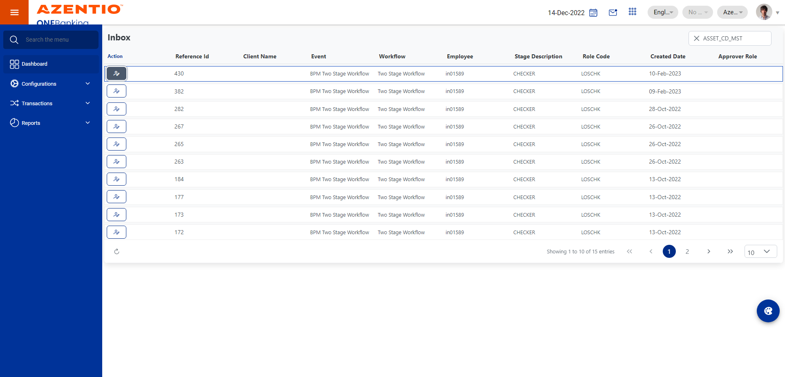And User click on Approve icon in asset CD master checkerstepdefinitions.HooksClass.addScreenshot(io.cucumber.java.Scenario)screenshot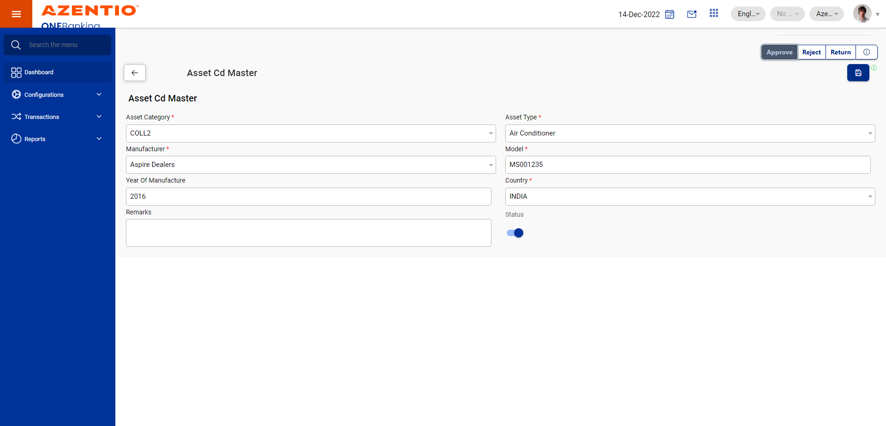And User click the popup remarks in asset CD master checkerstepdefinitions.HooksClass.addScreenshot(io.cucumber.java.Scenario)screenshot
And User click the search icon in asset CD master and get the reference id afterapprovedstepdefinitions.HooksClass.addScreenshot(io.cucumber.java.Scenario)screenshotAnd User search the respective reference id and click on Action button in asset CD masterstepdefinitions.HooksClass.addScreenshot(io.cucumber.java.Scenario)screenshot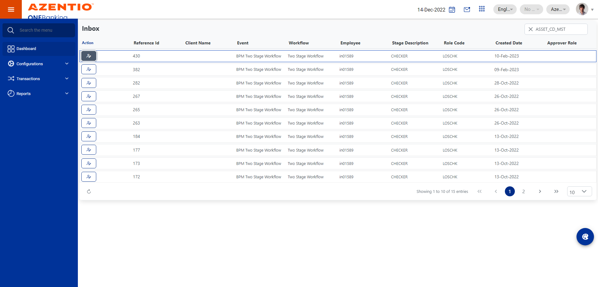And User click on Approve icon in asset CD master checkerstepdefinitions.HooksClass.addScreenshot(io.cucumber.java.Scenario)screenshot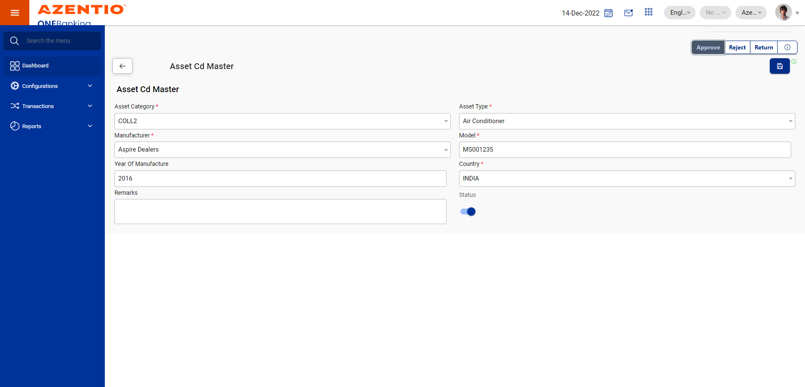And User click the popup remarks in asset CD master checkerstepdefinitions.HooksClass.addScreenshot(io.cucumber.java.Scenario)screenshot Then User enter the popup remarks in asset CD master checkerstepdefinitions.HooksClass.addScreenshot(io.cucumber.java.Scenario)screenshotAnd User click the popup approve in asset CD master checkerstepdefinitions.HooksClass.addScreenshot(io.cucumber.java.Scenario)screenshot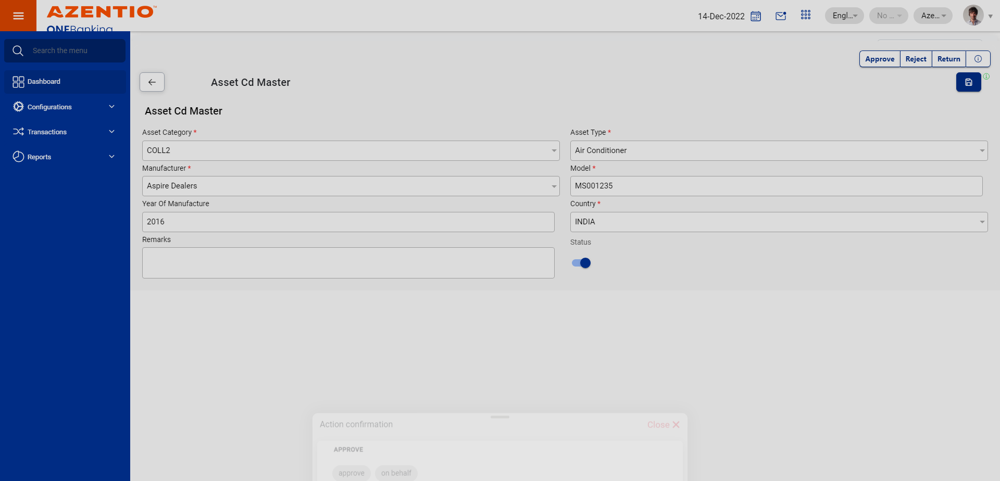Then User verify the Record got Approved in asset CD checkerstepdefinitions.HooksClass.addScreenshot(io.cucumber.java.Scenario)screenshot
Then User enter the popup remarks in asset CD master checkerstepdefinitions.HooksClass.addScreenshot(io.cucumber.java.Scenario)screenshotAnd User click the popup approve in asset CD master checkerstepdefinitions.HooksClass.addScreenshot(io.cucumber.java.Scenario)screenshot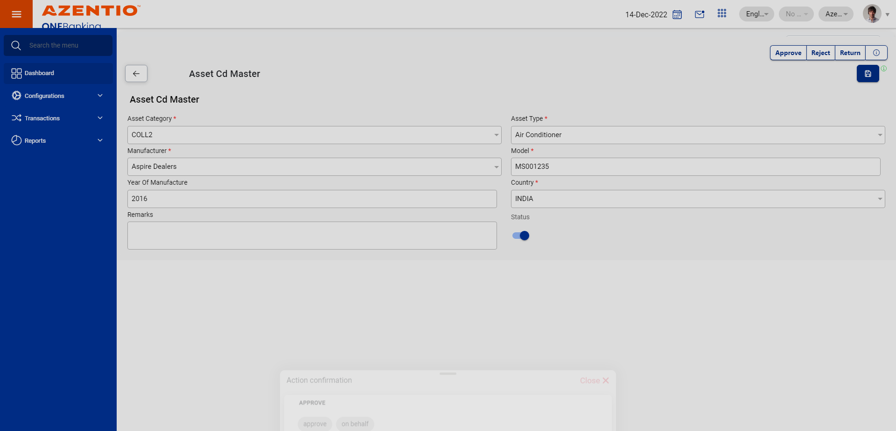Then User verify the Record got Approved in asset CD checkerstepdefinitions.HooksClass.addScreenshot(io.cucumber.java.Scenario)screenshot And User Logout from applicationstepdefinitions.HooksClass.addScreenshot(io.cucumber.java.Scenario)screenshot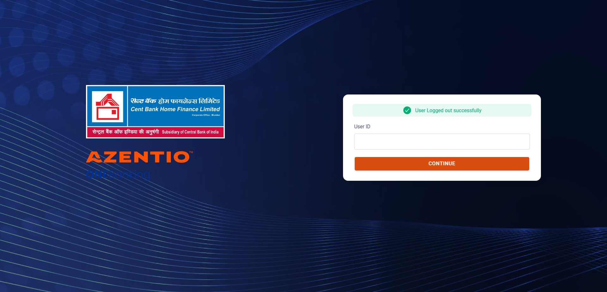PassTo verify the Asset CD Master all flowAnd User get the testdata for Assert CD Master testcase001stepdefinitions.HooksClass.addScreenshot(io.cucumber.java.Scenario)screenshot
And User Logout from applicationstepdefinitions.HooksClass.addScreenshot(io.cucumber.java.Scenario)screenshot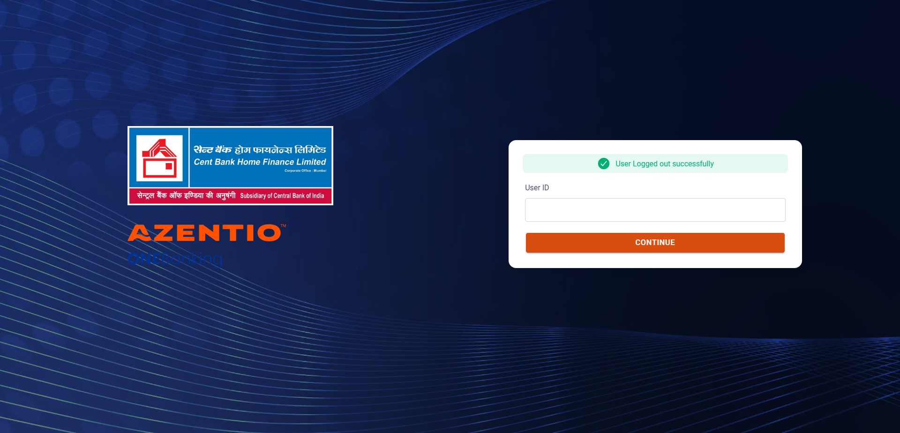PassTo verify the Asset CD Master all flowAnd User get the testdata for Assert CD Master testcase001stepdefinitions.HooksClass.addScreenshot(io.cucumber.java.Scenario)screenshot Given User login as uls maker in asset CD masterstepdefinitions.HooksClass.addScreenshot(io.cucumber.java.Scenario)screenshot
Given User login as uls maker in asset CD masterstepdefinitions.HooksClass.addScreenshot(io.cucumber.java.Scenario)screenshot Then User click the Configurations in asset auto masterstepdefinitions.HooksClass.addScreenshot(io.cucumber.java.Scenario)screenshotAnd User click the config manager in Bounce masterstepdefinitions.HooksClass.addScreenshot(io.cucumber.java.Scenario)screenshotAnd User click the edit icon in asset CD masterstepdefinitions.HooksClass.addScreenshot(io.cucumber.java.Scenario)screenshotAnd User click the add icon in asset CD masterstepdefinitions.HooksClass.addScreenshot(io.cucumber.java.Scenario)screenshotAnd User enter the value in asset category for asset CD masterstepdefinitions.HooksClass.addScreenshot(io.cucumber.java.Scenario)screenshotAnd User enter the value in asset type for asset CD masterstepdefinitions.HooksClass.addScreenshot(io.cucumber.java.Scenario)screenshotAnd User enter the value in manufacturer for asset CD masterstepdefinitions.HooksClass.addScreenshot(io.cucumber.java.Scenario)screenshot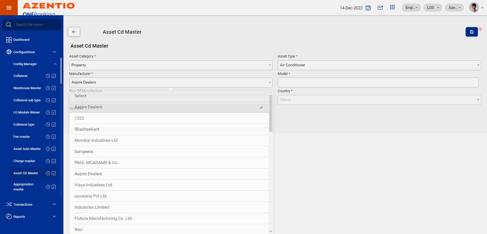And User enter the value in model for asset CD masterstepdefinitions.HooksClass.addScreenshot(io.cucumber.java.Scenario)screenshotAnd User enter the value in year of manufacture for asset CD masterstepdefinitions.HooksClass.addScreenshot(io.cucumber.java.Scenario)screenshot
Then User click the Configurations in asset auto masterstepdefinitions.HooksClass.addScreenshot(io.cucumber.java.Scenario)screenshotAnd User click the config manager in Bounce masterstepdefinitions.HooksClass.addScreenshot(io.cucumber.java.Scenario)screenshotAnd User click the edit icon in asset CD masterstepdefinitions.HooksClass.addScreenshot(io.cucumber.java.Scenario)screenshotAnd User click the add icon in asset CD masterstepdefinitions.HooksClass.addScreenshot(io.cucumber.java.Scenario)screenshotAnd User enter the value in asset category for asset CD masterstepdefinitions.HooksClass.addScreenshot(io.cucumber.java.Scenario)screenshotAnd User enter the value in asset type for asset CD masterstepdefinitions.HooksClass.addScreenshot(io.cucumber.java.Scenario)screenshotAnd User enter the value in manufacturer for asset CD masterstepdefinitions.HooksClass.addScreenshot(io.cucumber.java.Scenario)screenshot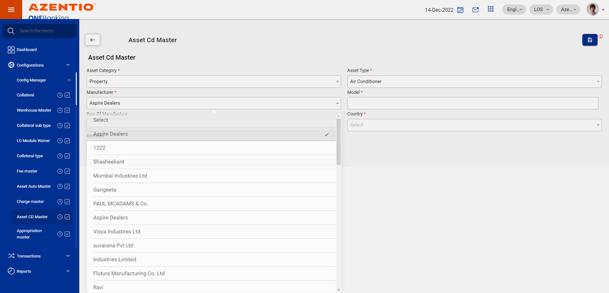And User enter the value in model for asset CD masterstepdefinitions.HooksClass.addScreenshot(io.cucumber.java.Scenario)screenshotAnd User enter the value in year of manufacture for asset CD masterstepdefinitions.HooksClass.addScreenshot(io.cucumber.java.Scenario)screenshot And User enter the value in country for asset CD masterstepdefinitions.HooksClass.addScreenshot(io.cucumber.java.Scenario)screenshotAnd User enter the value in remarks for asset CD masterstepdefinitions.HooksClass.addScreenshot(io.cucumber.java.Scenario)screenshot
And User enter the value in country for asset CD masterstepdefinitions.HooksClass.addScreenshot(io.cucumber.java.Scenario)screenshotAnd User enter the value in remarks for asset CD masterstepdefinitions.HooksClass.addScreenshot(io.cucumber.java.Scenario)screenshot And User click the save button for asset CD masterstepdefinitions.HooksClass.addScreenshot(io.cucumber.java.Scenario)screenshotThen User verify the confirmation message in asset CD masterstepdefinitions.HooksClass.addScreenshot(io.cucumber.java.Scenario)screenshotThen User click the inboxmail icon in asset CD masterstepdefinitions.HooksClass.addScreenshot(io.cucumber.java.Scenario)screenshotAnd User click the search icon in asset CD master and get the reference idstepdefinitions.HooksClass.addScreenshot(io.cucumber.java.Scenario)screenshotAnd User click the submit icon in asset CD master makerstepdefinitions.HooksClass.addScreenshot(io.cucumber.java.Scenario)screenshotAnd User enter the popup remark and submit the asset CD masterstepdefinitions.HooksClass.addScreenshot(io.cucumber.java.Scenario)screenshotAnd User get confirmation message and checker id in asset CD masterstepdefinitions.HooksClass.addScreenshot(io.cucumber.java.Scenario)screenshot
And User click the save button for asset CD masterstepdefinitions.HooksClass.addScreenshot(io.cucumber.java.Scenario)screenshotThen User verify the confirmation message in asset CD masterstepdefinitions.HooksClass.addScreenshot(io.cucumber.java.Scenario)screenshotThen User click the inboxmail icon in asset CD masterstepdefinitions.HooksClass.addScreenshot(io.cucumber.java.Scenario)screenshotAnd User click the search icon in asset CD master and get the reference idstepdefinitions.HooksClass.addScreenshot(io.cucumber.java.Scenario)screenshotAnd User click the submit icon in asset CD master makerstepdefinitions.HooksClass.addScreenshot(io.cucumber.java.Scenario)screenshotAnd User enter the popup remark and submit the asset CD masterstepdefinitions.HooksClass.addScreenshot(io.cucumber.java.Scenario)screenshotAnd User get confirmation message and checker id in asset CD masterstepdefinitions.HooksClass.addScreenshot(io.cucumber.java.Scenario)screenshot And User Logout from applicationstepdefinitions.HooksClass.addScreenshot(io.cucumber.java.Scenario)screenshot
And User Logout from applicationstepdefinitions.HooksClass.addScreenshot(io.cucumber.java.Scenario)screenshot PassTo verify user able to approve in checker stage for Asset-CD-MasterAnd User get the testdata for Assert CD Master testcase001stepdefinitions.HooksClass.addScreenshot(io.cucumber.java.Scenario)screenshot
PassTo verify user able to approve in checker stage for Asset-CD-MasterAnd User get the testdata for Assert CD Master testcase001stepdefinitions.HooksClass.addScreenshot(io.cucumber.java.Scenario)screenshot Given User login as uls checker in asset CD masterstepdefinitions.HooksClass.addScreenshot(io.cucumber.java.Scenario)screenshot
Given User login as uls checker in asset CD masterstepdefinitions.HooksClass.addScreenshot(io.cucumber.java.Scenario)screenshot And User click the inboxicon in asset CD master checkerstepdefinitions.HooksClass.addScreenshot(io.cucumber.java.Scenario)screenshot
And User click the inboxicon in asset CD master checkerstepdefinitions.HooksClass.addScreenshot(io.cucumber.java.Scenario)screenshot And User click the search icon in asset CD master and get the reference idstepdefinitions.HooksClass.addScreenshot(io.cucumber.java.Scenario)screenshotAnd User search the respective reference id and click on Action button in asset CD masterstepdefinitions.HooksClass.addScreenshot(io.cucumber.java.Scenario)screenshotAnd User click on Approve icon in asset CD master checkerstepdefinitions.HooksClass.addScreenshot(io.cucumber.java.Scenario)screenshotAnd User click the popup remarks in asset CD master checkerstepdefinitions.HooksClass.addScreenshot(io.cucumber.java.Scenario)screenshot
And User click the search icon in asset CD master and get the reference idstepdefinitions.HooksClass.addScreenshot(io.cucumber.java.Scenario)screenshotAnd User search the respective reference id and click on Action button in asset CD masterstepdefinitions.HooksClass.addScreenshot(io.cucumber.java.Scenario)screenshotAnd User click on Approve icon in asset CD master checkerstepdefinitions.HooksClass.addScreenshot(io.cucumber.java.Scenario)screenshotAnd User click the popup remarks in asset CD master checkerstepdefinitions.HooksClass.addScreenshot(io.cucumber.java.Scenario)screenshot Then User enter the popup remarks in asset CD master checkerstepdefinitions.HooksClass.addScreenshot(io.cucumber.java.Scenario)screenshot
Then User enter the popup remarks in asset CD master checkerstepdefinitions.HooksClass.addScreenshot(io.cucumber.java.Scenario)screenshot And User click the popup approve in asset CD master checkerstepdefinitions.HooksClass.addScreenshot(io.cucumber.java.Scenario)screenshotThen User verify the Record got Approved in asset CD checkerstepdefinitions.HooksClass.addScreenshot(io.cucumber.java.Scenario)screenshotAnd User Logout from applicationstepdefinitions.HooksClass.addScreenshot(io.cucumber.java.Scenario)screenshotPassTo verify the functionality of Submit button at Maker stageAnd User get the testdata for Assert CD Master testcase009stepdefinitions.HooksClass.addScreenshot(io.cucumber.java.Scenario)screenshot
And User click the popup approve in asset CD master checkerstepdefinitions.HooksClass.addScreenshot(io.cucumber.java.Scenario)screenshotThen User verify the Record got Approved in asset CD checkerstepdefinitions.HooksClass.addScreenshot(io.cucumber.java.Scenario)screenshotAnd User Logout from applicationstepdefinitions.HooksClass.addScreenshot(io.cucumber.java.Scenario)screenshotPassTo verify the functionality of Submit button at Maker stageAnd User get the testdata for Assert CD Master testcase009stepdefinitions.HooksClass.addScreenshot(io.cucumber.java.Scenario)screenshot Given User login as uls maker in asset CD masterstepdefinitions.HooksClass.addScreenshot(io.cucumber.java.Scenario)screenshotThen User click the Configurations in asset auto masterstepdefinitions.HooksClass.addScreenshot(io.cucumber.java.Scenario)screenshotAnd User click the config manager in Bounce masterstepdefinitions.HooksClass.addScreenshot(io.cucumber.java.Scenario)screenshotAnd Click the Asset CD Master setup eye icon in Asset CD masterstepdefinitions.HooksClass.addScreenshot(io.cucumber.java.Scenario)screenshot
Given User login as uls maker in asset CD masterstepdefinitions.HooksClass.addScreenshot(io.cucumber.java.Scenario)screenshotThen User click the Configurations in asset auto masterstepdefinitions.HooksClass.addScreenshot(io.cucumber.java.Scenario)screenshotAnd User click the config manager in Bounce masterstepdefinitions.HooksClass.addScreenshot(io.cucumber.java.Scenario)screenshotAnd Click the Asset CD Master setup eye icon in Asset CD masterstepdefinitions.HooksClass.addScreenshot(io.cucumber.java.Scenario)screenshot And Click the listview pencil icon in asset CD masterstepdefinitions.HooksClass.addScreenshot(io.cucumber.java.Scenario)screenshotAnd User update the assetcategory in asset CD masterstepdefinitions.HooksClass.addScreenshot(io.cucumber.java.Scenario)screenshotAnd User update the assettype in asset CD masterstepdefinitions.HooksClass.addScreenshot(io.cucumber.java.Scenario)screenshotAnd User click the update button for asset CD masterstepdefinitions.HooksClass.addScreenshot(io.cucumber.java.Scenario)screenshotThen User verify the confirmation message in asset CD masterstepdefinitions.HooksClass.addScreenshot(io.cucumber.java.Scenario)screenshotThen User click the inboxmail icon in asset CD masterstepdefinitions.HooksClass.addScreenshot(io.cucumber.java.Scenario)screenshotAnd User click the search icon in asset CD master and get the reference id testcase009stepdefinitions.HooksClass.addScreenshot(io.cucumber.java.Scenario)screenshotAnd User click the submit icon in asset CD master makerstepdefinitions.HooksClass.addScreenshot(io.cucumber.java.Scenario)screenshotAnd User enter the popup remark and submit the asset CD masterstepdefinitions.HooksClass.addScreenshot(io.cucumber.java.Scenario)screenshotAnd User get confirmation message and checker id in asset CD master testcase009stepdefinitions.HooksClass.addScreenshot(io.cucumber.java.Scenario)screenshot
And Click the listview pencil icon in asset CD masterstepdefinitions.HooksClass.addScreenshot(io.cucumber.java.Scenario)screenshotAnd User update the assetcategory in asset CD masterstepdefinitions.HooksClass.addScreenshot(io.cucumber.java.Scenario)screenshotAnd User update the assettype in asset CD masterstepdefinitions.HooksClass.addScreenshot(io.cucumber.java.Scenario)screenshotAnd User click the update button for asset CD masterstepdefinitions.HooksClass.addScreenshot(io.cucumber.java.Scenario)screenshotThen User verify the confirmation message in asset CD masterstepdefinitions.HooksClass.addScreenshot(io.cucumber.java.Scenario)screenshotThen User click the inboxmail icon in asset CD masterstepdefinitions.HooksClass.addScreenshot(io.cucumber.java.Scenario)screenshotAnd User click the search icon in asset CD master and get the reference id testcase009stepdefinitions.HooksClass.addScreenshot(io.cucumber.java.Scenario)screenshotAnd User click the submit icon in asset CD master makerstepdefinitions.HooksClass.addScreenshot(io.cucumber.java.Scenario)screenshotAnd User enter the popup remark and submit the asset CD masterstepdefinitions.HooksClass.addScreenshot(io.cucumber.java.Scenario)screenshotAnd User get confirmation message and checker id in asset CD master testcase009stepdefinitions.HooksClass.addScreenshot(io.cucumber.java.Scenario)screenshot And User Logout from applicationstepdefinitions.HooksClass.addScreenshot(io.cucumber.java.Scenario)screenshot
And User Logout from applicationstepdefinitions.HooksClass.addScreenshot(io.cucumber.java.Scenario)screenshot PassTo verify the user able to reject the record in asset CD masterAnd User get the testdata for Assert CD Master testcase009stepdefinitions.HooksClass.addScreenshot(io.cucumber.java.Scenario)screenshot
PassTo verify the user able to reject the record in asset CD masterAnd User get the testdata for Assert CD Master testcase009stepdefinitions.HooksClass.addScreenshot(io.cucumber.java.Scenario)screenshot Given User login as uls checker in asset CD masterstepdefinitions.HooksClass.addScreenshot(io.cucumber.java.Scenario)screenshot
Given User login as uls checker in asset CD masterstepdefinitions.HooksClass.addScreenshot(io.cucumber.java.Scenario)screenshot And User click the inboxicon in asset CD master checkerstepdefinitions.HooksClass.addScreenshot(io.cucumber.java.Scenario)screenshot
And User click the inboxicon in asset CD master checkerstepdefinitions.HooksClass.addScreenshot(io.cucumber.java.Scenario)screenshot And User search the respective reference id and click on Action button in asset CD masterstepdefinitions.HooksClass.addScreenshot(io.cucumber.java.Scenario)screenshotAnd User click the reject icon in asset CD master checkerstepdefinitions.HooksClass.addScreenshot(io.cucumber.java.Scenario)screenshotAnd User enter the reject remark in asset CD master checkerstepdefinitions.HooksClass.addScreenshot(io.cucumber.java.Scenario)screenshotAnd User click the final reject icon in asset CD master checkerstepdefinitions.HooksClass.addScreenshot(io.cucumber.java.Scenario)screenshotThen User verify the Record got Rejected in asset CD checkerstepdefinitions.HooksClass.addScreenshot(io.cucumber.java.Scenario)screenshotAnd User Logout from applicationstepdefinitions.HooksClass.addScreenshot(io.cucumber.java.Scenario)screenshot
And User search the respective reference id and click on Action button in asset CD masterstepdefinitions.HooksClass.addScreenshot(io.cucumber.java.Scenario)screenshotAnd User click the reject icon in asset CD master checkerstepdefinitions.HooksClass.addScreenshot(io.cucumber.java.Scenario)screenshotAnd User enter the reject remark in asset CD master checkerstepdefinitions.HooksClass.addScreenshot(io.cucumber.java.Scenario)screenshotAnd User click the final reject icon in asset CD master checkerstepdefinitions.HooksClass.addScreenshot(io.cucumber.java.Scenario)screenshotThen User verify the Record got Rejected in asset CD checkerstepdefinitions.HooksClass.addScreenshot(io.cucumber.java.Scenario)screenshotAnd User Logout from applicationstepdefinitions.HooksClass.addScreenshot(io.cucumber.java.Scenario)screenshot PassTo verify the Asset CD Master all flowAnd User get the testdata for Assert CD Master testcase001stepdefinitions.HooksClass.addScreenshot(io.cucumber.java.Scenario)screenshot
PassTo verify the Asset CD Master all flowAnd User get the testdata for Assert CD Master testcase001stepdefinitions.HooksClass.addScreenshot(io.cucumber.java.Scenario)screenshot Given User login as uls maker in asset CD masterstepdefinitions.HooksClass.addScreenshot(io.cucumber.java.Scenario)screenshot
Given User login as uls maker in asset CD masterstepdefinitions.HooksClass.addScreenshot(io.cucumber.java.Scenario)screenshot Then User click the Configurations in asset auto masterstepdefinitions.HooksClass.addScreenshot(io.cucumber.java.Scenario)screenshotAnd User click the config manager in Bounce masterstepdefinitions.HooksClass.addScreenshot(io.cucumber.java.Scenario)screenshotAnd User click the edit icon in asset CD masterstepdefinitions.HooksClass.addScreenshot(io.cucumber.java.Scenario)screenshotAnd User click the add icon in asset CD masterstepdefinitions.HooksClass.addScreenshot(io.cucumber.java.Scenario)screenshotAnd User enter the value in asset category for asset CD masterstepdefinitions.HooksClass.addScreenshot(io.cucumber.java.Scenario)screenshot
Then User click the Configurations in asset auto masterstepdefinitions.HooksClass.addScreenshot(io.cucumber.java.Scenario)screenshotAnd User click the config manager in Bounce masterstepdefinitions.HooksClass.addScreenshot(io.cucumber.java.Scenario)screenshotAnd User click the edit icon in asset CD masterstepdefinitions.HooksClass.addScreenshot(io.cucumber.java.Scenario)screenshotAnd User click the add icon in asset CD masterstepdefinitions.HooksClass.addScreenshot(io.cucumber.java.Scenario)screenshotAnd User enter the value in asset category for asset CD masterstepdefinitions.HooksClass.addScreenshot(io.cucumber.java.Scenario)screenshot And User enter the value in asset type for asset CD masterstepdefinitions.HooksClass.addScreenshot(io.cucumber.java.Scenario)screenshotAnd User enter the value in manufacturer for asset CD masterstepdefinitions.HooksClass.addScreenshot(io.cucumber.java.Scenario)screenshot
And User enter the value in asset type for asset CD masterstepdefinitions.HooksClass.addScreenshot(io.cucumber.java.Scenario)screenshotAnd User enter the value in manufacturer for asset CD masterstepdefinitions.HooksClass.addScreenshot(io.cucumber.java.Scenario)screenshot And User enter the value in model for asset CD masterstepdefinitions.HooksClass.addScreenshot(io.cucumber.java.Scenario)screenshot
And User enter the value in model for asset CD masterstepdefinitions.HooksClass.addScreenshot(io.cucumber.java.Scenario)screenshot And User enter the value in year of manufacture for asset CD masterstepdefinitions.HooksClass.addScreenshot(io.cucumber.java.Scenario)screenshot
And User enter the value in year of manufacture for asset CD masterstepdefinitions.HooksClass.addScreenshot(io.cucumber.java.Scenario)screenshot And User enter the value in country for asset CD masterstepdefinitions.HooksClass.addScreenshot(io.cucumber.java.Scenario)screenshotAnd User enter the value in remarks for asset CD masterstepdefinitions.HooksClass.addScreenshot(io.cucumber.java.Scenario)screenshotAnd User click the save button for asset CD masterstepdefinitions.HooksClass.addScreenshot(io.cucumber.java.Scenario)screenshotThen User verify the confirmation message in asset CD masterstepdefinitions.HooksClass.addScreenshot(io.cucumber.java.Scenario)screenshotThen User click the inboxmail icon in asset CD masterstepdefinitions.HooksClass.addScreenshot(io.cucumber.java.Scenario)screenshot
And User enter the value in country for asset CD masterstepdefinitions.HooksClass.addScreenshot(io.cucumber.java.Scenario)screenshotAnd User enter the value in remarks for asset CD masterstepdefinitions.HooksClass.addScreenshot(io.cucumber.java.Scenario)screenshotAnd User click the save button for asset CD masterstepdefinitions.HooksClass.addScreenshot(io.cucumber.java.Scenario)screenshotThen User verify the confirmation message in asset CD masterstepdefinitions.HooksClass.addScreenshot(io.cucumber.java.Scenario)screenshotThen User click the inboxmail icon in asset CD masterstepdefinitions.HooksClass.addScreenshot(io.cucumber.java.Scenario)screenshot And User click the search icon in asset CD master and get the reference idstepdefinitions.HooksClass.addScreenshot(io.cucumber.java.Scenario)screenshotAnd User click the submit icon in asset CD master makerstepdefinitions.HooksClass.addScreenshot(io.cucumber.java.Scenario)screenshot
And User click the search icon in asset CD master and get the reference idstepdefinitions.HooksClass.addScreenshot(io.cucumber.java.Scenario)screenshotAnd User click the submit icon in asset CD master makerstepdefinitions.HooksClass.addScreenshot(io.cucumber.java.Scenario)screenshot And User enter the popup remark and submit the asset CD masterstepdefinitions.HooksClass.addScreenshot(io.cucumber.java.Scenario)screenshotAnd User get confirmation message and checker id in asset CD masterstepdefinitions.HooksClass.addScreenshot(io.cucumber.java.Scenario)screenshot
And User enter the popup remark and submit the asset CD masterstepdefinitions.HooksClass.addScreenshot(io.cucumber.java.Scenario)screenshotAnd User get confirmation message and checker id in asset CD masterstepdefinitions.HooksClass.addScreenshot(io.cucumber.java.Scenario)screenshot And User Logout from applicationstepdefinitions.HooksClass.addScreenshot(io.cucumber.java.Scenario)screenshot
And User Logout from applicationstepdefinitions.HooksClass.addScreenshot(io.cucumber.java.Scenario)screenshot PassTo verify user able to approve in checker stage for Asset-CD-MasterAnd User get the testdata for Assert CD Master testcase001stepdefinitions.HooksClass.addScreenshot(io.cucumber.java.Scenario)screenshot
PassTo verify user able to approve in checker stage for Asset-CD-MasterAnd User get the testdata for Assert CD Master testcase001stepdefinitions.HooksClass.addScreenshot(io.cucumber.java.Scenario)screenshot Given User login as uls checker in asset CD masterstepdefinitions.HooksClass.addScreenshot(io.cucumber.java.Scenario)screenshot
Given User login as uls checker in asset CD masterstepdefinitions.HooksClass.addScreenshot(io.cucumber.java.Scenario)screenshot And User click the inboxicon in asset CD master checkerstepdefinitions.HooksClass.addScreenshot(io.cucumber.java.Scenario)screenshot
And User click the inboxicon in asset CD master checkerstepdefinitions.HooksClass.addScreenshot(io.cucumber.java.Scenario)screenshot And User click the search icon in asset CD master and get the reference idstepdefinitions.HooksClass.addScreenshot(io.cucumber.java.Scenario)screenshotAnd User search the respective reference id and click on Action button in asset CD masterstepdefinitions.HooksClass.addScreenshot(io.cucumber.java.Scenario)screenshotAnd User click on Approve icon in asset CD master checkerstepdefinitions.HooksClass.addScreenshot(io.cucumber.java.Scenario)screenshotAnd User click the popup remarks in asset CD master checkerstepdefinitions.HooksClass.addScreenshot(io.cucumber.java.Scenario)screenshotThen User enter the popup remarks in asset CD master checkerstepdefinitions.HooksClass.addScreenshot(io.cucumber.java.Scenario)screenshot
And User click the search icon in asset CD master and get the reference idstepdefinitions.HooksClass.addScreenshot(io.cucumber.java.Scenario)screenshotAnd User search the respective reference id and click on Action button in asset CD masterstepdefinitions.HooksClass.addScreenshot(io.cucumber.java.Scenario)screenshotAnd User click on Approve icon in asset CD master checkerstepdefinitions.HooksClass.addScreenshot(io.cucumber.java.Scenario)screenshotAnd User click the popup remarks in asset CD master checkerstepdefinitions.HooksClass.addScreenshot(io.cucumber.java.Scenario)screenshotThen User enter the popup remarks in asset CD master checkerstepdefinitions.HooksClass.addScreenshot(io.cucumber.java.Scenario)screenshot And User click the popup approve in asset CD master checkerstepdefinitions.HooksClass.addScreenshot(io.cucumber.java.Scenario)screenshotThen User verify the Record got Approved in asset CD checkerstepdefinitions.HooksClass.addScreenshot(io.cucumber.java.Scenario)screenshotAnd User Logout from applicationstepdefinitions.HooksClass.addScreenshot(io.cucumber.java.Scenario)screenshotPassTo verify the functionality of Submit button at Maker stageAnd User get the testdata for Assert CD Master testcase010stepdefinitions.HooksClass.addScreenshot(io.cucumber.java.Scenario)screenshot
And User click the popup approve in asset CD master checkerstepdefinitions.HooksClass.addScreenshot(io.cucumber.java.Scenario)screenshotThen User verify the Record got Approved in asset CD checkerstepdefinitions.HooksClass.addScreenshot(io.cucumber.java.Scenario)screenshotAnd User Logout from applicationstepdefinitions.HooksClass.addScreenshot(io.cucumber.java.Scenario)screenshotPassTo verify the functionality of Submit button at Maker stageAnd User get the testdata for Assert CD Master testcase010stepdefinitions.HooksClass.addScreenshot(io.cucumber.java.Scenario)screenshot Given User login as uls maker in asset CD masterstepdefinitions.HooksClass.addScreenshot(io.cucumber.java.Scenario)screenshot
Given User login as uls maker in asset CD masterstepdefinitions.HooksClass.addScreenshot(io.cucumber.java.Scenario)screenshot Then User click the Configurations in asset auto masterstepdefinitions.HooksClass.addScreenshot(io.cucumber.java.Scenario)screenshotAnd User click the config manager in Bounce masterstepdefinitions.HooksClass.addScreenshot(io.cucumber.java.Scenario)screenshotAnd Click the Asset CD Master setup eye icon in Asset CD masterstepdefinitions.HooksClass.addScreenshot(io.cucumber.java.Scenario)screenshotAnd Click the listview pencil icon in asset CD masterstepdefinitions.HooksClass.addScreenshot(io.cucumber.java.Scenario)screenshotAnd User update the assetcategory in asset CD masterstepdefinitions.HooksClass.addScreenshot(io.cucumber.java.Scenario)screenshotAnd User update the assettype in asset CD masterstepdefinitions.HooksClass.addScreenshot(io.cucumber.java.Scenario)screenshotAnd User click the update button for asset CD masterstepdefinitions.HooksClass.addScreenshot(io.cucumber.java.Scenario)screenshotThen User verify the confirmation message in asset CD masterstepdefinitions.HooksClass.addScreenshot(io.cucumber.java.Scenario)screenshotThen User click the inboxmail icon in asset CD masterstepdefinitions.HooksClass.addScreenshot(io.cucumber.java.Scenario)screenshotAnd User click the search icon in asset CD master and get the reference id testcase010stepdefinitions.HooksClass.addScreenshot(io.cucumber.java.Scenario)screenshotAnd User click the submit icon in asset CD master makerstepdefinitions.HooksClass.addScreenshot(io.cucumber.java.Scenario)screenshotAnd User enter the popup remark and submit the asset CD masterstepdefinitions.HooksClass.addScreenshot(io.cucumber.java.Scenario)screenshotAnd User get confirmation message and checker id in asset CD master testcase010stepdefinitions.HooksClass.addScreenshot(io.cucumber.java.Scenario)screenshotAnd User Logout from applicationstepdefinitions.HooksClass.addScreenshot(io.cucumber.java.Scenario)screenshotPassTo verify the user able to return the record in asset CD masterAnd User get the testdata for Assert CD Master testcase010stepdefinitions.HooksClass.addScreenshot(io.cucumber.java.Scenario)screenshot
Then User click the Configurations in asset auto masterstepdefinitions.HooksClass.addScreenshot(io.cucumber.java.Scenario)screenshotAnd User click the config manager in Bounce masterstepdefinitions.HooksClass.addScreenshot(io.cucumber.java.Scenario)screenshotAnd Click the Asset CD Master setup eye icon in Asset CD masterstepdefinitions.HooksClass.addScreenshot(io.cucumber.java.Scenario)screenshotAnd Click the listview pencil icon in asset CD masterstepdefinitions.HooksClass.addScreenshot(io.cucumber.java.Scenario)screenshotAnd User update the assetcategory in asset CD masterstepdefinitions.HooksClass.addScreenshot(io.cucumber.java.Scenario)screenshotAnd User update the assettype in asset CD masterstepdefinitions.HooksClass.addScreenshot(io.cucumber.java.Scenario)screenshotAnd User click the update button for asset CD masterstepdefinitions.HooksClass.addScreenshot(io.cucumber.java.Scenario)screenshotThen User verify the confirmation message in asset CD masterstepdefinitions.HooksClass.addScreenshot(io.cucumber.java.Scenario)screenshotThen User click the inboxmail icon in asset CD masterstepdefinitions.HooksClass.addScreenshot(io.cucumber.java.Scenario)screenshotAnd User click the search icon in asset CD master and get the reference id testcase010stepdefinitions.HooksClass.addScreenshot(io.cucumber.java.Scenario)screenshotAnd User click the submit icon in asset CD master makerstepdefinitions.HooksClass.addScreenshot(io.cucumber.java.Scenario)screenshotAnd User enter the popup remark and submit the asset CD masterstepdefinitions.HooksClass.addScreenshot(io.cucumber.java.Scenario)screenshotAnd User get confirmation message and checker id in asset CD master testcase010stepdefinitions.HooksClass.addScreenshot(io.cucumber.java.Scenario)screenshotAnd User Logout from applicationstepdefinitions.HooksClass.addScreenshot(io.cucumber.java.Scenario)screenshotPassTo verify the user able to return the record in asset CD masterAnd User get the testdata for Assert CD Master testcase010stepdefinitions.HooksClass.addScreenshot(io.cucumber.java.Scenario)screenshot Given User login as uls checker in asset CD masterstepdefinitions.HooksClass.addScreenshot(io.cucumber.java.Scenario)screenshotAnd User click the inboxicon in asset CD master checkerstepdefinitions.HooksClass.addScreenshot(io.cucumber.java.Scenario)screenshot
Given User login as uls checker in asset CD masterstepdefinitions.HooksClass.addScreenshot(io.cucumber.java.Scenario)screenshotAnd User click the inboxicon in asset CD master checkerstepdefinitions.HooksClass.addScreenshot(io.cucumber.java.Scenario)screenshot And User click the search icon in asset CD master and get the reference id testcase010stepdefinitions.HooksClass.addScreenshot(io.cucumber.java.Scenario)screenshotAnd User search the respective reference id and click on Action button in asset CD masterstepdefinitions.HooksClass.addScreenshot(io.cucumber.java.Scenario)screenshotAnd User click the return icon in asset CD master checkerstepdefinitions.HooksClass.addScreenshot(io.cucumber.java.Scenario)screenshot
And User click the search icon in asset CD master and get the reference id testcase010stepdefinitions.HooksClass.addScreenshot(io.cucumber.java.Scenario)screenshotAnd User search the respective reference id and click on Action button in asset CD masterstepdefinitions.HooksClass.addScreenshot(io.cucumber.java.Scenario)screenshotAnd User click the return icon in asset CD master checkerstepdefinitions.HooksClass.addScreenshot(io.cucumber.java.Scenario)screenshot And User enter the return remark in asset CD master checkerstepdefinitions.HooksClass.addScreenshot(io.cucumber.java.Scenario)screenshotAnd User click the final return icon in asset CD master checkerstepdefinitions.HooksClass.addScreenshot(io.cucumber.java.Scenario)screenshotThen User verify the Record got Returned in asset CD checkerstepdefinitions.HooksClass.addScreenshot(io.cucumber.java.Scenario)screenshotAnd User Logout from applicationstepdefinitions.HooksClass.addScreenshot(io.cucumber.java.Scenario)screenshotPassTo verify the functionality of Activate/Deactivate buttonAnd User get the testdata for Assert CD Master testcase011stepdefinitions.HooksClass.addScreenshot(io.cucumber.java.Scenario)screenshot
And User enter the return remark in asset CD master checkerstepdefinitions.HooksClass.addScreenshot(io.cucumber.java.Scenario)screenshotAnd User click the final return icon in asset CD master checkerstepdefinitions.HooksClass.addScreenshot(io.cucumber.java.Scenario)screenshotThen User verify the Record got Returned in asset CD checkerstepdefinitions.HooksClass.addScreenshot(io.cucumber.java.Scenario)screenshotAnd User Logout from applicationstepdefinitions.HooksClass.addScreenshot(io.cucumber.java.Scenario)screenshotPassTo verify the functionality of Activate/Deactivate buttonAnd User get the testdata for Assert CD Master testcase011stepdefinitions.HooksClass.addScreenshot(io.cucumber.java.Scenario)screenshot Given User login as uls maker in asset CD masterstepdefinitions.HooksClass.addScreenshot(io.cucumber.java.Scenario)screenshotThen User click the Configurations in asset auto masterstepdefinitions.HooksClass.addScreenshot(io.cucumber.java.Scenario)screenshotAnd User click the config manager in Bounce masterstepdefinitions.HooksClass.addScreenshot(io.cucumber.java.Scenario)screenshot
Given User login as uls maker in asset CD masterstepdefinitions.HooksClass.addScreenshot(io.cucumber.java.Scenario)screenshotThen User click the Configurations in asset auto masterstepdefinitions.HooksClass.addScreenshot(io.cucumber.java.Scenario)screenshotAnd User click the config manager in Bounce masterstepdefinitions.HooksClass.addScreenshot(io.cucumber.java.Scenario)screenshot And Click the Asset CD Master setup eye icon in Asset CD masterstepdefinitions.HooksClass.addScreenshot(io.cucumber.java.Scenario)screenshotAnd Click the listview pencil icon in asset CD masterstepdefinitions.HooksClass.addScreenshot(io.cucumber.java.Scenario)screenshotAnd User click the backbutton in asset CD masterstepdefinitions.HooksClass.addScreenshot(io.cucumber.java.Scenario)screenshot
And Click the Asset CD Master setup eye icon in Asset CD masterstepdefinitions.HooksClass.addScreenshot(io.cucumber.java.Scenario)screenshotAnd Click the listview pencil icon in asset CD masterstepdefinitions.HooksClass.addScreenshot(io.cucumber.java.Scenario)screenshotAnd User click the backbutton in asset CD masterstepdefinitions.HooksClass.addScreenshot(io.cucumber.java.Scenario)screenshot And Click the listview pencil icon in asset CD masterstepdefinitions.HooksClass.addScreenshot(io.cucumber.java.Scenario)screenshotAnd Verify the active status in asset CD masterstepdefinitions.HooksClass.addScreenshot(io.cucumber.java.Scenario)screenshotAnd User click the status button in asset CD masterstepdefinitions.HooksClass.addScreenshot(io.cucumber.java.Scenario)screenshotAnd Verify the Deactive status in asset CD masterstepdefinitions.HooksClass.addScreenshot(io.cucumber.java.Scenario)screenshotAnd User Logout from applicationstepdefinitions.HooksClass.addScreenshot(io.cucumber.java.Scenario)screenshot
And Click the listview pencil icon in asset CD masterstepdefinitions.HooksClass.addScreenshot(io.cucumber.java.Scenario)screenshotAnd Verify the active status in asset CD masterstepdefinitions.HooksClass.addScreenshot(io.cucumber.java.Scenario)screenshotAnd User click the status button in asset CD masterstepdefinitions.HooksClass.addScreenshot(io.cucumber.java.Scenario)screenshotAnd Verify the Deactive status in asset CD masterstepdefinitions.HooksClass.addScreenshot(io.cucumber.java.Scenario)screenshotAnd User Logout from applicationstepdefinitions.HooksClass.addScreenshot(io.cucumber.java.Scenario)screenshot PassTo verify the functionality of search and pdf, excel downloadAnd User get the testdata for Assert CD Master testcase012stepdefinitions.HooksClass.addScreenshot(io.cucumber.java.Scenario)screenshot
PassTo verify the functionality of search and pdf, excel downloadAnd User get the testdata for Assert CD Master testcase012stepdefinitions.HooksClass.addScreenshot(io.cucumber.java.Scenario)screenshot Given User login as uls maker in asset CD masterstepdefinitions.HooksClass.addScreenshot(io.cucumber.java.Scenario)screenshotThen User click the Configurations in asset auto masterstepdefinitions.HooksClass.addScreenshot(io.cucumber.java.Scenario)screenshotAnd User click the config manager in Bounce masterstepdefinitions.HooksClass.addScreenshot(io.cucumber.java.Scenario)screenshotAnd Click the Asset CD Master setup eye icon in Asset CD masterstepdefinitions.HooksClass.addScreenshot(io.cucumber.java.Scenario)screenshot
Given User login as uls maker in asset CD masterstepdefinitions.HooksClass.addScreenshot(io.cucumber.java.Scenario)screenshotThen User click the Configurations in asset auto masterstepdefinitions.HooksClass.addScreenshot(io.cucumber.java.Scenario)screenshotAnd User click the config manager in Bounce masterstepdefinitions.HooksClass.addScreenshot(io.cucumber.java.Scenario)screenshotAnd Click the Asset CD Master setup eye icon in Asset CD masterstepdefinitions.HooksClass.addScreenshot(io.cucumber.java.Scenario)screenshot And Verify the functionality of Export to PDF button in asset CD masterstepdefinitions.HooksClass.addScreenshot(io.cucumber.java.Scenario)screenshotAnd Verify the functionality of Export to Excel button in asset CD masterstepdefinitions.HooksClass.addScreenshot(io.cucumber.java.Scenario)screenshotAnd Verify the functionality of Search box with matching data in asset CD masterstepdefinitions.HooksClass.addScreenshot(io.cucumber.java.Scenario)screenshotAnd Verify the functionality of Search box with mismatch data in asset CD masterstepdefinitions.HooksClass.addScreenshot(io.cucumber.java.Scenario)screenshotAnd User click the edit icon in asset CD masterstepdefinitions.HooksClass.addScreenshot(io.cucumber.java.Scenario)screenshotAnd Verify the functionality of Export to PDF button in asset CD masterstepdefinitions.HooksClass.addScreenshot(io.cucumber.java.Scenario)screenshotAnd Verify the functionality of Export to Excel button in asset CD masterstepdefinitions.HooksClass.addScreenshot(io.cucumber.java.Scenario)screenshotAnd Verify the functionality of Search box with matching data in asset CD masterstepdefinitions.HooksClass.addScreenshot(io.cucumber.java.Scenario)screenshotAnd Verify the functionality of Search box with mismatch data in asset CD masterstepdefinitions.HooksClass.addScreenshot(io.cucumber.java.Scenario)screenshotAnd User Logout from applicationstepdefinitions.HooksClass.addScreenshot(io.cucumber.java.Scenario)screenshot
And Verify the functionality of Export to PDF button in asset CD masterstepdefinitions.HooksClass.addScreenshot(io.cucumber.java.Scenario)screenshotAnd Verify the functionality of Export to Excel button in asset CD masterstepdefinitions.HooksClass.addScreenshot(io.cucumber.java.Scenario)screenshotAnd Verify the functionality of Search box with matching data in asset CD masterstepdefinitions.HooksClass.addScreenshot(io.cucumber.java.Scenario)screenshotAnd Verify the functionality of Search box with mismatch data in asset CD masterstepdefinitions.HooksClass.addScreenshot(io.cucumber.java.Scenario)screenshotAnd User click the edit icon in asset CD masterstepdefinitions.HooksClass.addScreenshot(io.cucumber.java.Scenario)screenshotAnd Verify the functionality of Export to PDF button in asset CD masterstepdefinitions.HooksClass.addScreenshot(io.cucumber.java.Scenario)screenshotAnd Verify the functionality of Export to Excel button in asset CD masterstepdefinitions.HooksClass.addScreenshot(io.cucumber.java.Scenario)screenshotAnd Verify the functionality of Search box with matching data in asset CD masterstepdefinitions.HooksClass.addScreenshot(io.cucumber.java.Scenario)screenshotAnd Verify the functionality of Search box with mismatch data in asset CD masterstepdefinitions.HooksClass.addScreenshot(io.cucumber.java.Scenario)screenshotAnd User Logout from applicationstepdefinitions.HooksClass.addScreenshot(io.cucumber.java.Scenario)screenshot
Started
Feb 10, 2023 09:47:32 am
Ended
Feb 10, 2023 10:09:54 am
Features Passed
1
Features Failed
0
Features
Scenarios
Steps
Timeline
Tags
| Name | Passed | Failed | Skipped | Others | Passed % |
|---|---|---|---|---|---|
| @AT-ACD-T004 | 1 | 0 | 0 | 0 | 100% |
| @AT-ACD-T009.2 | 1 | 0 | 0 | 0 | 100% |
| @AT-ACD-T010.1 | 1 | 0 | 0 | 0 | 100% |
| @AT-ACD-T012 | 1 | 0 | 0 | 0 | 100% |
| @AT-ACD-T003 | 1 | 0 | 0 | 0 | 100% |
| @AT-ACD-T010 | 1 | 0 | 0 | 0 | 100% |
| @AT-ACD-T001 | 1 | 0 | 0 | 0 | 100% |
| @AT-ACD-T004.1 | 1 | 0 | 0 | 0 | 100% |
| @AT-ACD-T006 | 1 | 0 | 0 | 0 | 100% |
| @AT-ACD-T007 | 1 | 0 | 0 | 0 | 100% |
| @AT-ACD-T009 | 1 | 0 | 0 | 0 | 100% |
| @AT-ACD-T002.1 | 1 | 0 | 0 | 0 | 100% |
| @AT-ACD-T005 | 1 | 0 | 0 | 0 | 100% |
| @AT-ACD-T011 | 1 | 0 | 0 | 0 | 100% |
| @AT-ACD-T009.3 | 1 | 0 | 0 | 0 | 100% |
| @AT-ACD-T006.1 | 1 | 0 | 0 | 0 | 100% |
| @AT-ACD-T004.2 | 1 | 0 | 0 | 0 | 100% |
| @AT-ACD-T006.2 | 1 | 0 | 0 | 0 | 100% |
| @AT-ACD-T007.1 | 1 | 0 | 0 | 0 | 100% |
| @AT-ACD-T003.2 | 1 | 0 | 0 | 0 | 100% |
| @AT-ACD-T010.2 | 1 | 0 | 0 | 0 | 100% |
| @AT-ACD-T009.1 | 1 | 0 | 0 | 0 | 100% |
| @AT-ACD-T007.2 | 1 | 0 | 0 | 0 | 100% |
| @AT-ACD-T008 | 1 | 0 | 0 | 0 | 100% |
| @AT-ACD-T003.1 | 1 | 0 | 0 | 0 | 100% |
| @AT-ACD-T002 | 1 | 0 | 0 | 0 | 100% |
| @AT-ACD-T010.3 | 1 | 0 | 0 | 0 | 100% |
System/Environment
| Name | Value |
|---|---|
| version | 10 |
| os | windows |
-
@AT-ACD-T004
1 tests
@AT-ACD-T004
1 passedStatus Timestamp TestName Pass 09:52:54 am To verify the Asset CD Master all flow To verify the Asset CD Master full flow.To verify the Asset CD Master all flow -
@AT-ACD-T009.2
1 tests
@AT-ACD-T009.2
1 passedStatus Timestamp TestName Pass 10:03:29 am To verify the functionality of Submit button at Maker stage To verify the Asset CD Master full flow.To verify the functionality of Submit button at Maker stage -
@AT-ACD-T010.1
1 tests
@AT-ACD-T010.1
1 passedStatus Timestamp TestName Pass 10:05:57 am To verify user able to approve in checker stage for Asset-CD-Master To verify the Asset CD Master full flow.To verify user able to approve in checker stage for Asset-CD-Master -
@AT-ACD-T012
1 tests
@AT-ACD-T012
1 passedStatus Timestamp TestName Pass 10:09:05 am To verify the functionality of search and pdf, excel download To verify the Asset CD Master full flow.To verify the functionality of search and pdf, excel download -
@AT-ACD-T003
1 tests
@AT-ACD-T003
1 passedStatus Timestamp TestName Pass 09:50:28 am To verify the Asset CD Master all flow To verify the Asset CD Master full flow.To verify the Asset CD Master all flow -
@AT-ACD-T010
1 tests
@AT-ACD-T010
1 passedStatus Timestamp TestName Pass 10:04:58 am To verify the Asset CD Master all flow To verify the Asset CD Master full flow.To verify the Asset CD Master all flow -
@AT-ACD-T001
1 tests
@AT-ACD-T001
1 passedStatus Timestamp TestName Pass 09:47:37 am To verify the Asset CD Master all flow To verify the Asset CD Master full flow.To verify the Asset CD Master all flow -
@AT-ACD-T004.1
1 tests
@AT-ACD-T004.1
1 passedStatus Timestamp TestName Pass 09:53:59 am To verify the user able to return the record in asset CD master To verify the Asset CD Master full flow.To verify the user able to return the record in asset CD master -
@AT-ACD-T006
1 tests
@AT-ACD-T006
1 passedStatus Timestamp TestName Pass 09:55:50 am To verify the Asset CD Master all flow To verify the Asset CD Master full flow.To verify the Asset CD Master all flow -
@AT-ACD-T007
1 tests
@AT-ACD-T007
1 passedStatus Timestamp TestName Pass 09:58:26 am To verify the Asset CD Master all flow To verify the Asset CD Master full flow.To verify the Asset CD Master all flow -
@AT-ACD-T009
1 tests
@AT-ACD-T009
1 passedStatus Timestamp TestName Pass 10:01:35 am To verify the Asset CD Master all flow To verify the Asset CD Master full flow.To verify the Asset CD Master all flow -
@AT-ACD-T002.1
1 tests
@AT-ACD-T002.1
1 passedStatus Timestamp TestName Pass 09:49:56 am To verify user able to approve in checker stage and verify in maker stage for Asset-CD-Master To verify the Asset CD Master full flow.To verify user able to approve in checker stage and verify in maker stage for Asset-CD-Master -
@AT-ACD-T005
1 tests
@AT-ACD-T005
1 passedStatus Timestamp TestName Pass 09:55:10 am To verify the impact when user keep any mandatory field blank and click on save button To verify the Asset CD Master full flow.To verify the impact when user keep any mandatory field blank and click on save button -
@AT-ACD-T011
1 tests
@AT-ACD-T011
1 passedStatus Timestamp TestName Pass 10:08:22 am To verify the functionality of Activate/Deactivate button To verify the Asset CD Master full flow.To verify the functionality of Activate/Deactivate button -
@AT-ACD-T009.3
1 tests
@AT-ACD-T009.3
1 passedStatus Timestamp TestName Pass 10:04:28 am To verify the user able to reject the record in asset CD master To verify the Asset CD Master full flow.To verify the user able to reject the record in asset CD master -
@AT-ACD-T006.1
1 tests
@AT-ACD-T006.1
1 passedStatus Timestamp TestName Pass 09:57:01 am To verify user able to approve in checker stage for Asset-CD-Master To verify the Asset CD Master full flow.To verify user able to approve in checker stage for Asset-CD-Master -
@AT-ACD-T004.2
1 tests
@AT-ACD-T004.2
1 passedStatus Timestamp TestName Pass 09:54:35 am To verify the rejected record shown in asset CD master maker stage To verify the Asset CD Master full flow.To verify the rejected record shown in asset CD master maker stage -
@AT-ACD-T006.2
1 tests
@AT-ACD-T006.2
1 passedStatus Timestamp TestName Pass 09:57:44 am To verify system allow user to modify the Personal details before approve the record To verify the Asset CD Master full flow.To verify system allow user to modify the Personal details before approve the record -
@AT-ACD-T007.1
1 tests
@AT-ACD-T007.1
1 passedStatus Timestamp TestName Pass 09:59:24 am To verify user able to approve in checker stage for Asset-CD-Master To verify the Asset CD Master full flow.To verify user able to approve in checker stage for Asset-CD-Master -
@AT-ACD-T003.2
1 tests
@AT-ACD-T003.2
1 passedStatus Timestamp TestName Pass 09:52:15 am To verify the rejected record shown in asset CD master maker stage To verify the Asset CD Master full flow.To verify the rejected record shown in asset CD master maker stage -
@AT-ACD-T010.2
1 tests
@AT-ACD-T010.2
1 passedStatus Timestamp TestName Pass 10:06:36 am To verify the functionality of Submit button at Maker stage To verify the Asset CD Master full flow.To verify the functionality of Submit button at Maker stage -
@AT-ACD-T009.1
1 tests
@AT-ACD-T009.1
1 passedStatus Timestamp TestName Pass 10:02:48 am To verify user able to approve in checker stage for Asset-CD-Master To verify the Asset CD Master full flow.To verify user able to approve in checker stage for Asset-CD-Master -
@AT-ACD-T007.2
1 tests
@AT-ACD-T007.2
1 passedStatus Timestamp TestName Pass 10:00:01 am To verify the functionality of Submit button at Maker stage To verify the Asset CD Master full flow.To verify the functionality of Submit button at Maker stage -
@AT-ACD-T008
1 tests
@AT-ACD-T008
1 passedStatus Timestamp TestName Pass 10:00:55 am To verify the functionality of Approve button at Checker stage To verify the Asset CD Master full flow.To verify the functionality of Approve button at Checker stage -
@AT-ACD-T003.1
1 tests
@AT-ACD-T003.1
1 passedStatus Timestamp TestName Pass 09:51:35 am To verify the user able to reject the record in asset CD master To verify the Asset CD Master full flow.To verify the user able to reject the record in asset CD master -
@AT-ACD-T002
1 tests
@AT-ACD-T002
1 passedStatus Timestamp TestName Pass 09:49:14 am To verify user able to approve in checker stage for Asset-CD-Master To verify the Asset CD Master full flow.To verify user able to approve in checker stage for Asset-CD-Master -
@AT-ACD-T010.3
1 tests
@AT-ACD-T010.3
1 passedStatus Timestamp TestName Pass 10:07:43 am To verify the user able to return the record in asset CD master To verify the Asset CD Master full flow.To verify the user able to return the record in asset CD master